Oracle upper-bound only. Legend: GT boundary green, prediction boundary magenta, TP blue tint, FP red, FN yellow. Replayed deletions are orange if background/gap and red if GT foreground.
cut=60.0 px, Dice +0.000819, Recall +0.000000, BIoU +0.004854, Gap -0.003198, Cnt +0.000000
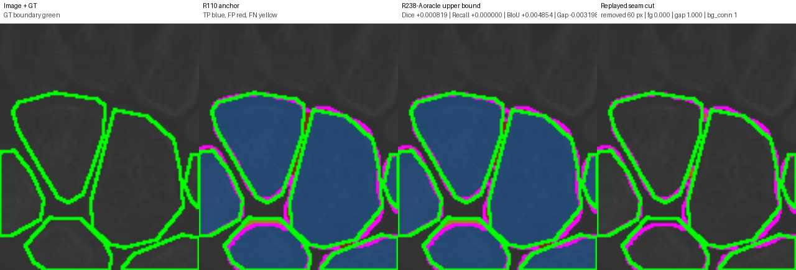
{
"anchor_boundary_f1": "0.49548557586434705",
"anchor_boundary_iou": "0.32933255269320844",
"anchor_component_count_mae": "1.0",
"anchor_component_delta_mean": "-1.0",
"anchor_dice": "0.9203531956502415",
"anchor_gap_region_fp_rate": "0.12222814498933902",
"anchor_iou": "0.8524576666575184",
"anchor_precision": "0.9301928605654048",
"anchor_recall": "0.9107195214918197",
"cut_pixels": "60.0",
"delta_boundary_f1": "0.005474011787130695",
"delta_boundary_iou": "0.00485429345501015",
"delta_component_count_mae": "0.0",
"delta_component_delta_mean": "0.0",
"delta_dice": "0.0008188438527093611",
"delta_gap_region_fp_rate": "-0.0031982942430703737",
"delta_iou": "0.0014060384308616225",
"delta_precision": "0.0016744141255827794",
"delta_recall": "0.0",
"edited": "1.0",
"image": "3468.png",
"num_accepted_cuts": "1.0",
"r238_boundary_f1": "0.5009595876514777",
"r238_boundary_iou": "0.3341868461482186",
"r238_component_count_mae": "1.0",
"r238_component_delta_mean": "-1.0",
"r238_dice": "0.9211720395029509",
"r238_gap_region_fp_rate": "0.11902985074626865",
"r238_iou": "0.85386370508838",
"r238_precision": "0.9318672746909876",
"r238_recall": "0.9107195214918197"
}
cut=89.0 px, Dice +0.000455, Recall +0.000000, BIoU +0.004823, Gap -0.002995, Cnt +0.000000
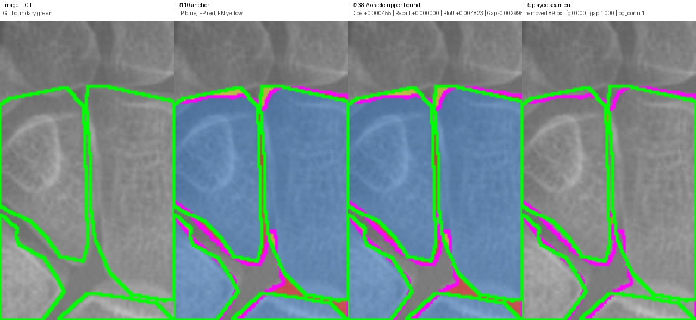
{
"anchor_boundary_f1": "0.40271462036654265",
"anchor_boundary_iou": "0.25212440150109994",
"anchor_component_count_mae": "2.0",
"anchor_component_delta_mean": "-2.0",
"anchor_dice": "0.9354451250805298",
"anchor_gap_region_fp_rate": "0.19699111470113084",
"anchor_iou": "0.8787194978100992",
"anchor_precision": "0.9343126990359029",
"anchor_recall": "0.9365802995517656",
"cut_pixels": "89.0",
"delta_boundary_f1": "0.006128567294125753",
"delta_boundary_iou": "0.00482273563215585",
"delta_component_count_mae": "0.0",
"delta_component_delta_mean": "0.0",
"delta_dice": "0.00045476184982040646",
"delta_gap_region_fp_rate": "-0.0029954227248249754",
"delta_iou": "0.0008029037339852829",
"delta_precision": "0.0009077631760334715",
"delta_recall": "0.0",
"edited": "1.0",
"image": "6606.png",
"num_accepted_cuts": "1.0",
"r238_boundary_f1": "0.4088431876606684",
"r238_boundary_iou": "0.2569471371332558",
"r238_component_count_mae": "2.0",
"r238_component_delta_mean": "-2.0",
"r238_dice": "0.9358998869303502",
"r238_gap_region_fp_rate": "0.19399569197630587",
"r238_iou": "0.8795224015440845",
"r238_precision": "0.9352204622119363",
"r238_recall": "0.9365802995517656"
}
cut=59.0 px, Dice +0.000474, Recall +0.000000, BIoU +0.004438, Gap -0.002513, Cnt +0.000000
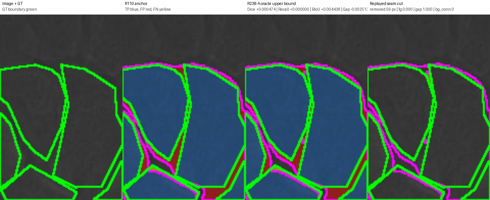
{
"anchor_boundary_f1": "0.36129258560968125",
"anchor_boundary_iou": "0.2204741263980307",
"anchor_component_count_mae": "5.0",
"anchor_component_delta_mean": "-5.0",
"anchor_dice": "0.9099072081289913",
"anchor_gap_region_fp_rate": "0.21582488714760242",
"anchor_iou": "0.8347061964947486",
"anchor_precision": "0.9087689624187325",
"anchor_recall": "0.9110483087520975",
"cut_pixels": "59.0",
"delta_boundary_f1": "0.005936834623272547",
"delta_boundary_iou": "0.004437704316942043",
"delta_component_count_mae": "0.0",
"delta_component_delta_mean": "0.0",
"delta_dice": "0.0004737719880296698",
"delta_gap_region_fp_rate": "-0.0025125628140703626",
"delta_iou": "0.0007977397478404757",
"delta_precision": "0.0009456659632209874",
"delta_recall": "0.0",
"edited": "1.0",
"image": "3840.png",
"num_accepted_cuts": "1.0",
"r238_boundary_f1": "0.3672294202329538",
"r238_boundary_iou": "0.22491183071497275",
"r238_component_count_mae": "5.0",
"r238_component_delta_mean": "-5.0",
"r238_dice": "0.910380980117021",
"r238_gap_region_fp_rate": "0.21331232433353206",
"r238_iou": "0.8355039362425891",
"r238_precision": "0.9097146283819535",
"r238_recall": "0.9110483087520975"
}
cut=75.0 px, Dice +0.000393, Recall +0.000000, BIoU +0.003522, Gap -0.002337, Cnt +0.000000
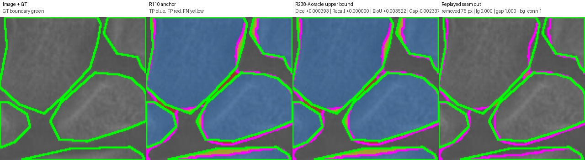
{
"anchor_boundary_f1": "0.4165490993799009",
"anchor_boundary_iou": "0.2630641084082715",
"anchor_component_count_mae": "2.0",
"anchor_component_delta_mean": "-2.0",
"anchor_dice": "0.9322967245782929",
"anchor_gap_region_fp_rate": "0.19494562338350316",
"anchor_iou": "0.8731796052700757",
"anchor_precision": "0.926983914358751",
"anchor_recall": "0.9376707843092974",
"cut_pixels": "75.0",
"delta_boundary_f1": "0.004403717544534225",
"delta_boundary_iou": "0.003522489786046412",
"delta_component_count_mae": "0.0",
"delta_component_delta_mean": "0.0",
"delta_dice": "0.0003926672339157333",
"delta_gap_region_fp_rate": "-0.002337103860895584",
"delta_iou": "0.0006891492022903511",
"delta_precision": "0.0007767327342462771",
"delta_recall": "0.0",
"edited": "1.0",
"image": "1620.png",
"num_accepted_cuts": "1.0",
"r238_boundary_f1": "0.42095281692443515",
"r238_boundary_iou": "0.2665865981943179",
"r238_component_count_mae": "2.0",
"r238_component_delta_mean": "-2.0",
"r238_dice": "0.9326893918122087",
"r238_gap_region_fp_rate": "0.19260851952260757",
"r238_iou": "0.873868754472366",
"r238_precision": "0.9277606470929973",
"r238_recall": "0.9376707843092974"
}
cut=63.0 px, Dice +0.000581, Recall +0.000000, BIoU +0.003480, Gap -0.002826, Cnt +0.000000
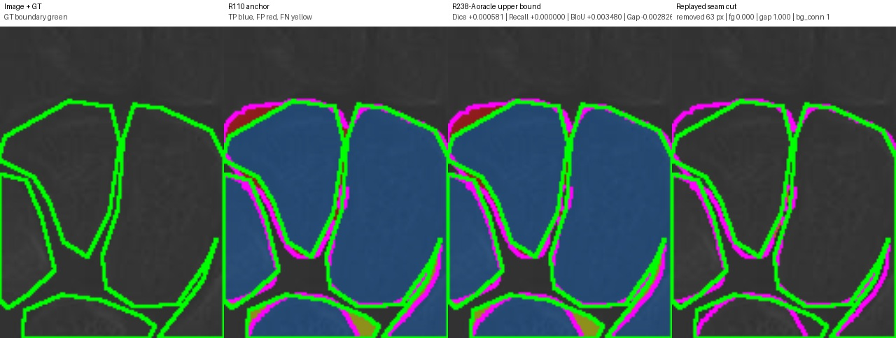
{
"anchor_boundary_f1": "0.45877446262431826",
"anchor_boundary_iou": "0.29766860949208995",
"anchor_component_count_mae": "1.0",
"anchor_component_delta_mean": "-1.0",
"anchor_dice": "0.9288746924847234",
"anchor_gap_region_fp_rate": "0.15706853247219232",
"anchor_iou": "0.8671951693863564",
"anchor_precision": "0.9284142061115628",
"anchor_recall": "0.9293356358800294",
"cut_pixels": "63.0",
"delta_boundary_f1": "0.004122417236602227",
"delta_boundary_iou": "0.003480268417309418",
"delta_component_count_mae": "0.0",
"delta_component_delta_mean": "0.0",
"delta_dice": "0.0005808636222793817",
"delta_gap_region_fp_rate": "-0.002825618945102276",
"delta_iou": "0.00101311604182297",
"delta_precision": "0.0011613011750988278",
"delta_recall": "0.0",
"edited": "1.0",
"image": "3602.png",
"num_accepted_cuts": "1.0",
"r238_boundary_f1": "0.4628968798609205",
"r238_boundary_iou": "0.30114887790939937",
"r238_component_count_mae": "1.0",
"r238_component_delta_mean": "-1.0",
"r238_dice": "0.9294555561070028",
"r238_gap_region_fp_rate": "0.15424291352709005",
"r238_iou": "0.8682082854281794",
"r238_precision": "0.9295755072866616",
"r238_recall": "0.9293356358800294"
}
cut=33.0 px, Dice +0.000450, Recall +0.000000, BIoU +0.003169, Gap -0.001795, Cnt +0.000000
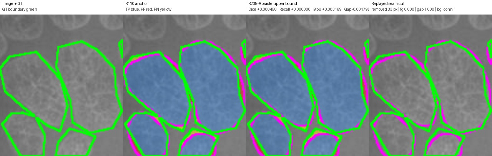
{
"anchor_boundary_f1": "0.3789387850195119",
"anchor_boundary_iou": "0.233759701063524",
"anchor_component_count_mae": "2.0",
"anchor_component_delta_mean": "2.0",
"anchor_dice": "0.9049671469045754",
"anchor_gap_region_fp_rate": "0.13922880295861206",
"anchor_iou": "0.8264292202251521",
"anchor_precision": "0.921379691287937",
"anchor_recall": "0.8891290828866713",
"cut_pixels": "33.0",
"delta_boundary_f1": "0.004153591453808669",
"delta_boundary_iou": "0.003169342314815554",
"delta_component_count_mae": "0.0",
"delta_component_delta_mean": "0.0",
"delta_dice": "0.00045027993076074413",
"delta_gap_region_fp_rate": "-0.0017947462881383602",
"delta_iou": "0.0007513406872948769",
"delta_precision": "0.0009340028817503843",
"delta_recall": "0.0",
"edited": "1.0",
"image": "7312.png",
"num_accepted_cuts": "1.0",
"r238_boundary_f1": "0.38309237647332056",
"r238_boundary_iou": "0.23692904337833956",
"r238_component_count_mae": "2.0",
"r238_component_delta_mean": "2.0",
"r238_dice": "0.9054174268353361",
"r238_gap_region_fp_rate": "0.1374340566704737",
"r238_iou": "0.827180560912447",
"r238_precision": "0.9223136941696873",
"r238_recall": "0.8891290828866713"
}
cut=137.0 px, Dice +0.000416, Recall +0.000000, BIoU +0.003092, Gap -0.003563, Cnt +0.000000
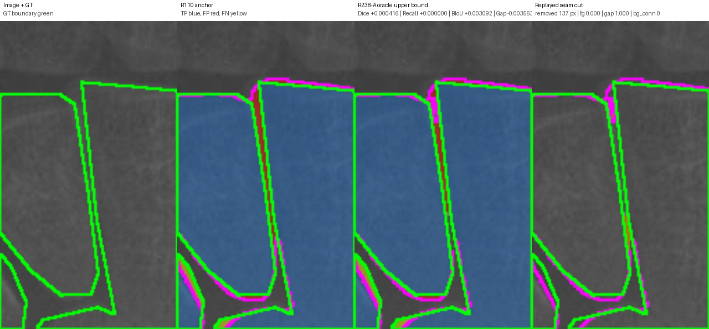
{
"anchor_boundary_f1": "0.27455435635261977",
"anchor_boundary_iou": "0.15912083777513011",
"anchor_component_count_mae": "1.0",
"anchor_component_delta_mean": "-1.0",
"anchor_dice": "0.9264087978018595",
"anchor_gap_region_fp_rate": "0.18890102460082175",
"anchor_iou": "0.8629064730644866",
"anchor_precision": "0.9434298292422625",
"anchor_recall": "0.9099910570099531",
"cut_pixels": "137.0",
"delta_boundary_f1": "0.004590546991303568",
"delta_boundary_iou": "0.003092066661943532",
"delta_component_count_mae": "0.0",
"delta_component_delta_mean": "0.0",
"delta_dice": "0.00041583556773283625",
"delta_gap_region_fp_rate": "-0.003562698288864602",
"delta_iou": "0.0007218417370984387",
"delta_precision": "0.0008629142600041773",
"delta_recall": "0.0",
"edited": "1.0",
"image": "1674.png",
"num_accepted_cuts": "1.0",
"r238_boundary_f1": "0.27914490334392333",
"r238_boundary_iou": "0.16221290443707365",
"r238_component_count_mae": "1.0",
"r238_component_delta_mean": "-1.0",
"r238_dice": "0.9268246333695923",
"r238_gap_region_fp_rate": "0.18533832631195715",
"r238_iou": "0.8636283148015851",
"r238_precision": "0.9442927435022667",
"r238_recall": "0.9099910570099531"
}
cut=84.0 px, Dice +0.000726, Recall +0.000000, BIoU +0.002832, Gap -0.003654, Cnt +0.000000
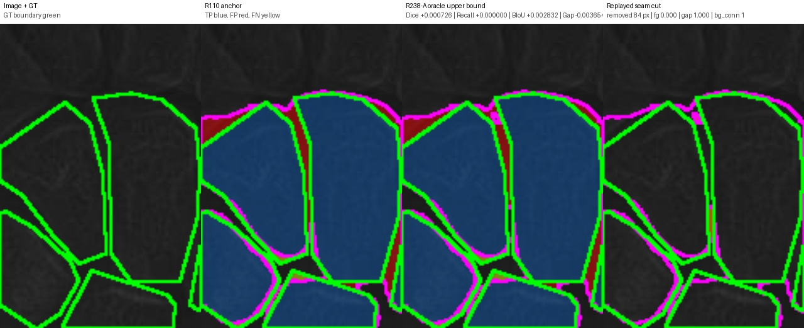
{
"anchor_boundary_f1": "0.4301708898055392",
"anchor_boundary_iou": "0.27402402402402404",
"anchor_component_count_mae": "4.0",
"anchor_component_delta_mean": "-4.0",
"anchor_dice": "0.9191734977814545",
"anchor_gap_region_fp_rate": "0.20281028407360682",
"anchor_iou": "0.8504357506914607",
"anchor_precision": "0.9054859979256186",
"anchor_recall": "0.9332811545510079",
"cut_pixels": "84.0",
"delta_boundary_f1": "0.0034813940002019206",
"delta_boundary_iou": "0.002831669844117979",
"delta_component_count_mae": "0.0",
"delta_component_delta_mean": "0.0",
"delta_dice": "0.0007264006116513011",
"delta_gap_region_fp_rate": "-0.003654239352677613",
"delta_iou": "0.0012444750807114602",
"delta_precision": "0.0014109375941558921",
"delta_recall": "0.0",
"edited": "1.0",
"image": "3392.png",
"num_accepted_cuts": "1.0",
"r238_boundary_f1": "0.4336522838057411",
"r238_boundary_iou": "0.276855693868142",
"r238_component_count_mae": "4.0",
"r238_component_delta_mean": "-4.0",
"r238_dice": "0.9198998983931058",
"r238_gap_region_fp_rate": "0.1991560447209292",
"r238_iou": "0.8516802257721722",
"r238_precision": "0.9068969355197745",
"r238_recall": "0.9332811545510079"
}
cut=55.0 px, Dice +0.000379, Recall +0.000000, BIoU +0.002741, Gap -0.002161, Cnt +0.000000
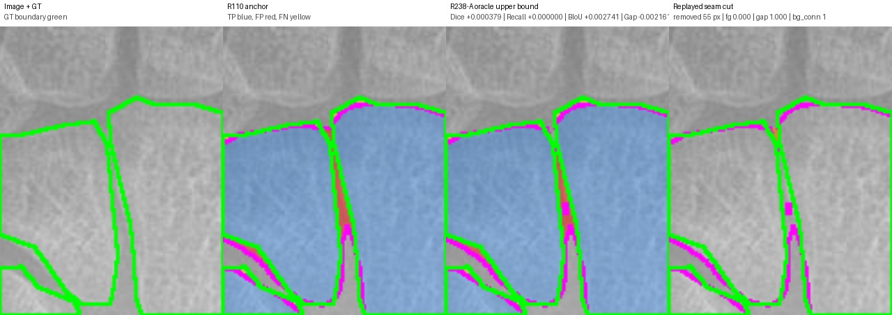
{
"anchor_boundary_f1": "0.4545976069496804",
"anchor_boundary_iou": "0.29416131940393486",
"anchor_component_count_mae": "3.0",
"anchor_component_delta_mean": "-3.0",
"anchor_dice": "0.9403342687778893",
"anchor_gap_region_fp_rate": "0.210977095037913",
"anchor_iou": "0.8873876365647905",
"anchor_precision": "0.9201020949540429",
"anchor_recall": "0.9614762204441248",
"cut_pixels": "55.0",
"delta_boundary_f1": "0.003266185309016345",
"delta_boundary_iou": "0.0027409840114742123",
"delta_component_count_mae": "0.0",
"delta_component_delta_mean": "0.0",
"delta_dice": "0.0003791058977495876",
"delta_gap_region_fp_rate": "-0.0021608454799041388",
"delta_iou": "0.0006754732545991571",
"delta_precision": "0.000726215705505906",
"delta_recall": "0.0",
"edited": "1.0",
"image": "14041.png",
"num_accepted_cuts": "1.0",
"r238_boundary_f1": "0.4578637922586967",
"r238_boundary_iou": "0.2969023034154091",
"r238_component_count_mae": "3.0",
"r238_component_delta_mean": "-3.0",
"r238_dice": "0.9407133746756389",
"r238_gap_region_fp_rate": "0.20881624955800887",
"r238_iou": "0.8880631098193896",
"r238_precision": "0.9208283106595488",
"r238_recall": "0.9614762204441248"
}
cut=39.0 px, Dice +0.000353, Recall +0.000000, BIoU +0.002618, Gap -0.001657, Cnt +0.000000
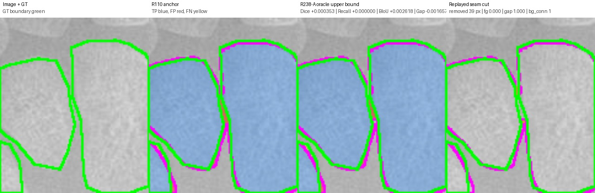
{
"anchor_boundary_f1": "0.474025974025974",
"anchor_boundary_iou": "0.31063829787234043",
"anchor_component_count_mae": "1.0",
"anchor_component_delta_mean": "-1.0",
"anchor_dice": "0.9386339329588484",
"anchor_gap_region_fp_rate": "0.1479247206763244",
"anchor_iou": "0.8843639928828207",
"anchor_precision": "0.9331583585577992",
"anchor_recall": "0.9441741456512047",
"cut_pixels": "39.0",
"delta_boundary_f1": "0.0030424328557856484",
"delta_boundary_iou": "0.002618324445770537",
"delta_component_count_mae": "0.0",
"delta_component_delta_mean": "0.0",
"delta_dice": "0.00035284268983870604",
"delta_gap_region_fp_rate": "-0.001656824843876109",
"delta_iou": "0.0006266501157802251",
"delta_precision": "0.0006977353090310556",
"delta_recall": "0.0",
"edited": "1.0",
"image": "11945.png",
"num_accepted_cuts": "1.0",
"r238_boundary_f1": "0.47706840688175967",
"r238_boundary_iou": "0.31325662231811097",
"r238_component_count_mae": "1.0",
"r238_component_delta_mean": "-1.0",
"r238_dice": "0.9389867756486872",
"r238_gap_region_fp_rate": "0.14626789583244829",
"r238_iou": "0.884990642998601",
"r238_precision": "0.9338560938668302",
"r238_recall": "0.9441741456512047"
}
cut=41.0 px, Dice +0.000278, Recall +0.000000, BIoU +0.002504, Gap -0.001715, Cnt +0.000000
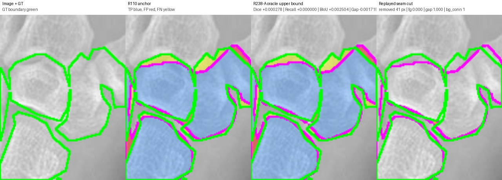
{
"anchor_boundary_f1": "0.3363746467501009",
"anchor_boundary_iou": "0.20219374878664337",
"anchor_component_count_mae": "3.0",
"anchor_component_delta_mean": "-3.0",
"anchor_dice": "0.9110243378988628",
"anchor_gap_region_fp_rate": "0.2343593174974908",
"anchor_iou": "0.8365883367320405",
"anchor_precision": "0.9061087146647693",
"anchor_recall": "0.9159935863815504",
"cut_pixels": "41.0",
"delta_boundary_f1": "0.0034577734883779465",
"delta_boundary_iou": "0.0025039120888298017",
"delta_component_count_mae": "0.0",
"delta_component_delta_mean": "0.0",
"delta_dice": "0.00027842834564906216",
"delta_gap_region_fp_rate": "-0.0017146202743392458",
"delta_iou": "0.00046969739279179024",
"delta_precision": "0.0005510302180548043",
"delta_recall": "0.0",
"edited": "1.0",
"image": "3777.png",
"num_accepted_cuts": "1.0",
"r238_boundary_f1": "0.33983242023847887",
"r238_boundary_iou": "0.20469766087547317",
"r238_component_count_mae": "3.0",
"r238_component_delta_mean": "-3.0",
"r238_dice": "0.9113027662445119",
"r238_gap_region_fp_rate": "0.23264469722315156",
"r238_iou": "0.8370580341248323",
"r238_precision": "0.9066597448828241",
"r238_recall": "0.9159935863815504"
}
cut=14.0 px, Dice +0.000131, Recall +0.000000, BIoU +0.002378, Gap -0.000601, Cnt +0.000000
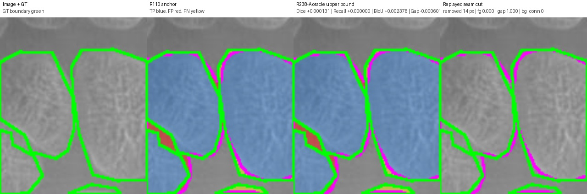
{
"anchor_boundary_f1": "0.456278079924332",
"anchor_boundary_iou": "0.2955701243796336",
"anchor_component_count_mae": "1.0",
"anchor_component_delta_mean": "-1.0",
"anchor_dice": "0.9247154768425537",
"anchor_gap_region_fp_rate": "0.1056701030927835",
"anchor_iou": "0.8599728322390763",
"anchor_precision": "0.9487355604121136",
"anchor_recall": "0.9018816406481867",
"cut_pixels": "14.0",
"delta_boundary_f1": "0.0028280600539586365",
"delta_boundary_iou": "0.002377808239049428",
"delta_component_count_mae": "0.0",
"delta_component_delta_mean": "0.0",
"delta_dice": "0.0001313356396926979",
"delta_gap_region_fp_rate": "-0.0006013745704467333",
"delta_iou": "0.0002272055038941012",
"delta_precision": "0.0002765359423241298",
"delta_recall": "0.0",
"edited": "1.0",
"image": "13480.png",
"num_accepted_cuts": "1.0",
"r238_boundary_f1": "0.45910613997829064",
"r238_boundary_iou": "0.297947932618683",
"r238_component_count_mae": "1.0",
"r238_component_delta_mean": "-1.0",
"r238_dice": "0.9248468124822464",
"r238_gap_region_fp_rate": "0.10506872852233677",
"r238_iou": "0.8602000377429704",
"r238_precision": "0.9490120963544377",
"r238_recall": "0.9018816406481867"
}
cut=58.0 px, Dice +0.000145, Recall +0.000000, BIoU +0.002301, Gap -0.001596, Cnt +0.000000
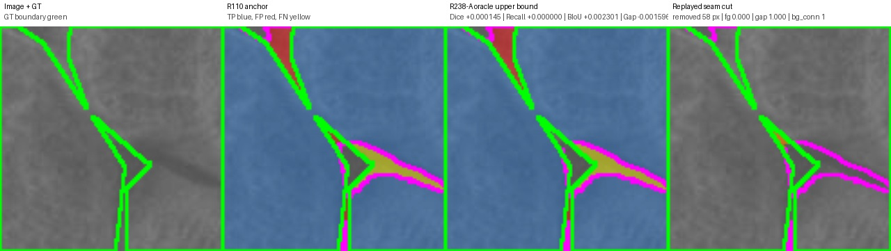
{
"anchor_boundary_f1": "0.2328752530094812",
"anchor_boundary_iou": "0.13178201109235593",
"anchor_component_count_mae": "2.0",
"anchor_component_delta_mean": "2.0",
"anchor_dice": "0.9172126168287946",
"anchor_gap_region_fp_rate": "0.3141119154441111",
"anchor_iou": "0.8470846918649116",
"anchor_precision": "0.9167006986076852",
"anchor_recall": "0.9177251071159905",
"cut_pixels": "58.0",
"delta_boundary_f1": "0.0035855451188255005",
"delta_boundary_iou": "0.0023010860553254187",
"delta_component_count_mae": "0.0",
"delta_component_delta_mean": "0.0",
"delta_dice": "0.00014493918023983365",
"delta_gap_region_fp_rate": "-0.001596432798436631",
"delta_iou": "0.00024727918488554046",
"delta_precision": "0.0002896005867285556",
"delta_recall": "0.0",
"edited": "1.0",
"image": "1931.png",
"num_accepted_cuts": "1.0",
"r238_boundary_f1": "0.2364607981283067",
"r238_boundary_iou": "0.13408309714768135",
"r238_component_count_mae": "2.0",
"r238_component_delta_mean": "2.0",
"r238_dice": "0.9173575560090345",
"r238_gap_region_fp_rate": "0.31251548264567447",
"r238_iou": "0.8473319710497972",
"r238_precision": "0.9169902991944138",
"r238_recall": "0.9177251071159905"
}
cut=40.0 px, Dice +0.000230, Recall +0.000000, BIoU +0.002184, Gap -0.001411, Cnt +0.000000
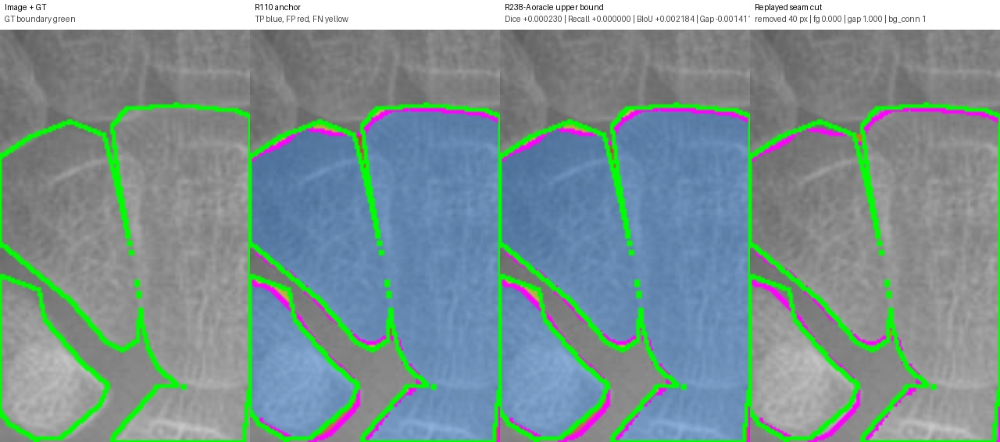
{
"anchor_boundary_f1": "0.4627277747101049",
"anchor_boundary_iou": "0.3010057471264368",
"anchor_component_count_mae": "0.0",
"anchor_component_delta_mean": "0.0",
"anchor_dice": "0.9495969934624726",
"anchor_gap_region_fp_rate": "0.11915764224487636",
"anchor_iou": "0.9040311076342552",
"anchor_precision": "0.9587379825289152",
"anchor_recall": "0.9406286658207847",
"cut_pixels": "40.0",
"delta_boundary_f1": "0.0025765475480544753",
"delta_boundary_iou": "0.00218421359777049",
"delta_component_count_mae": "0.0",
"delta_component_delta_mean": "0.0",
"delta_dice": "0.00022955700711024818",
"delta_gap_region_fp_rate": "-0.001410984514444949",
"delta_iou": "0.00041620142149734196",
"delta_precision": "0.0004681109235529224",
"delta_recall": "0.0",
"edited": "1.0",
"image": "12498.png",
"num_accepted_cuts": "1.0",
"r238_boundary_f1": "0.4653043222581594",
"r238_boundary_iou": "0.3031899607242073",
"r238_component_count_mae": "0.0",
"r238_component_delta_mean": "0.0",
"r238_dice": "0.9498265504695829",
"r238_gap_region_fp_rate": "0.11774665773043141",
"r238_iou": "0.9044473090557525",
"r238_precision": "0.9592060934524681",
"r238_recall": "0.9406286658207847"
}
cut=26.0 px, Dice +0.000104, Recall +0.000000, BIoU +0.002158, Gap -0.000791, Cnt +0.000000
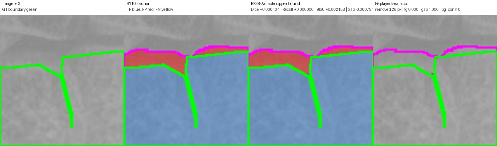
{
"anchor_boundary_f1": "0.22975102426725497",
"anchor_boundary_iou": "0.12978458251735803",
"anchor_component_count_mae": "2.0",
"anchor_component_delta_mean": "-2.0",
"anchor_dice": "0.8976236455315953",
"anchor_gap_region_fp_rate": "0.3229448823690538",
"anchor_iou": "0.8142624267049463",
"anchor_precision": "0.8847773978638654",
"anchor_recall": "0.9108484232681351",
"cut_pixels": "26.0",
"delta_boundary_f1": "0.0033747227290336357",
"delta_boundary_iou": "0.0021578840163930524",
"delta_component_count_mae": "0.0",
"delta_component_delta_mean": "0.0",
"delta_dice": "0.00010433844537149906",
"delta_gap_region_fp_rate": "-0.0007913077882947261",
"delta_iou": "0.00017173376294310483",
"delta_precision": "0.0002027696107930188",
"delta_recall": "0.0",
"edited": "1.0",
"image": "1572.png",
"num_accepted_cuts": "1.0",
"r238_boundary_f1": "0.2331257469962886",
"r238_boundary_iou": "0.13194246653375108",
"r238_component_count_mae": "2.0",
"r238_component_delta_mean": "-2.0",
"r238_dice": "0.8977279839769668",
"r238_gap_region_fp_rate": "0.32215357458075905",
"r238_iou": "0.8144341604678894",
"r238_precision": "0.8849801674746585",
"r238_recall": "0.9108484232681351"
}
cut=23.0 px, Dice +0.000229, Recall +0.000000, BIoU +0.002146, Gap -0.001063, Cnt +0.000000
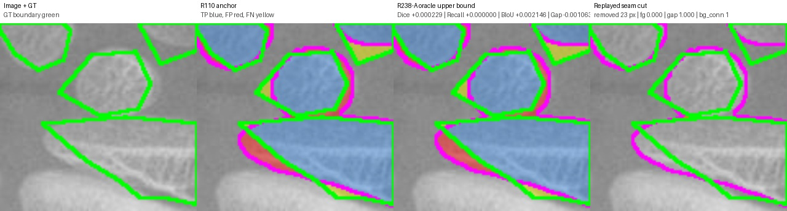
{
"anchor_boundary_f1": "0.2542683228584154",
"anchor_boundary_iou": "0.14565143440299352",
"anchor_component_count_mae": "3.0",
"anchor_component_delta_mean": "-3.0",
"anchor_dice": "0.8543689320388349",
"anchor_gap_region_fp_rate": "0.3637540453074434",
"anchor_iou": "0.7457627118644068",
"anchor_precision": "0.8009068515248621",
"anchor_recall": "0.915478919565434",
"cut_pixels": "23.0",
"delta_boundary_f1": "0.003264029211129227",
"delta_boundary_iou": "0.0021460597860194497",
"delta_component_count_mae": "0.0",
"delta_component_delta_mean": "0.0",
"delta_dice": "0.00022854185104903557",
"delta_gap_region_fp_rate": "-0.0010633379565418433",
"delta_iou": "0.00034833155381341907",
"delta_precision": "0.00040176352421095185",
"delta_recall": "0.0",
"edited": "1.0",
"image": "10624.png",
"num_accepted_cuts": "1.0",
"r238_boundary_f1": "0.2575323520695446",
"r238_boundary_iou": "0.14779749418901297",
"r238_component_count_mae": "3.0",
"r238_component_delta_mean": "-3.0",
"r238_dice": "0.8545974738898839",
"r238_gap_region_fp_rate": "0.36269070735090153",
"r238_iou": "0.7461110434182202",
"r238_precision": "0.801308615049073",
"r238_recall": "0.915478919565434"
}
cut=21.0 px, Dice +0.000292, Recall +0.000000, BIoU +0.002103, Gap -0.001165, Cnt -1.000000
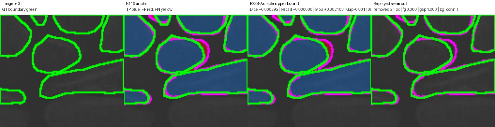
{
"anchor_boundary_f1": "0.48129193676788357",
"anchor_boundary_iou": "0.3169087913733713",
"anchor_component_count_mae": "2.0",
"anchor_component_delta_mean": "-2.0",
"anchor_dice": "0.9189728096676737",
"anchor_gap_region_fp_rate": "0.11349642203361625",
"anchor_iou": "0.8500922251411324",
"anchor_precision": "0.9364859456297527",
"anchor_recall": "0.9021026720839883",
"cut_pixels": "21.0",
"delta_boundary_f1": "0.002421603125431604",
"delta_boundary_iou": "0.0021031846745329097",
"delta_component_count_mae": "-1.0",
"delta_component_delta_mean": "1.0",
"delta_dice": "0.00029160955896923024",
"delta_gap_region_fp_rate": "-0.0011649192877350723",
"delta_iou": "0.0004992012731177553",
"delta_precision": "0.0006058596690765583",
"delta_recall": "0.0",
"edited": "1.0",
"image": "3269.png",
"num_accepted_cuts": "1.0",
"r238_boundary_f1": "0.48371353989331517",
"r238_boundary_iou": "0.3190119760479042",
"r238_component_count_mae": "1.0",
"r238_component_delta_mean": "-1.0",
"r238_dice": "0.9192644192266429",
"r238_gap_region_fp_rate": "0.11233150274588118",
"r238_iou": "0.8505914264142501",
"r238_precision": "0.9370918052988293",
"r238_recall": "0.9021026720839883"
}
cut=39.0 px, Dice +0.000283, Recall +0.000000, BIoU +0.002097, Gap -0.001510, Cnt +0.000000
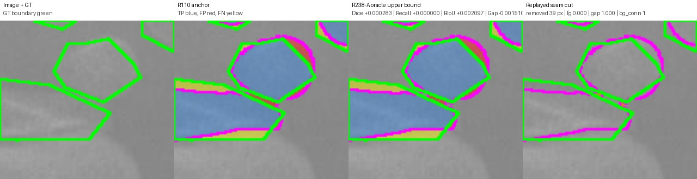
{
"anchor_boundary_f1": "0.3314314695067833",
"anchor_boundary_iou": "0.1986322188449848",
"anchor_component_count_mae": "2.0",
"anchor_component_delta_mean": "-2.0",
"anchor_dice": "0.9121444149063181",
"anchor_gap_region_fp_rate": "0.1559633027522936",
"anchor_iou": "0.8384793233632825",
"anchor_precision": "0.9319952505652153",
"anchor_recall": "0.8931215611702542",
"cut_pixels": "39.0",
"delta_boundary_f1": "0.0029140095755378903",
"delta_boundary_iou": "0.002096968920864889",
"delta_component_count_mae": "0.0",
"delta_component_delta_mean": "0.0",
"delta_dice": "0.0002832318106142928",
"delta_gap_region_fp_rate": "-0.0015096968993148496",
"delta_iou": "0.00047878729719574853",
"delta_precision": "0.0005915792905837325",
"delta_recall": "0.0",
"edited": "1.0",
"image": "1880.png",
"num_accepted_cuts": "1.0",
"r238_boundary_f1": "0.3343454790823212",
"r238_boundary_iou": "0.2007291877658497",
"r238_component_count_mae": "2.0",
"r238_component_delta_mean": "-2.0",
"r238_dice": "0.9124276467169324",
"r238_gap_region_fp_rate": "0.15445360585297874",
"r238_iou": "0.8389581106604782",
"r238_precision": "0.932586829855799",
"r238_recall": "0.8931215611702542"
}
cut=10.0 px, Dice +0.000168, Recall +0.000000, BIoU +0.002024, Gap -0.000548, Cnt +0.000000
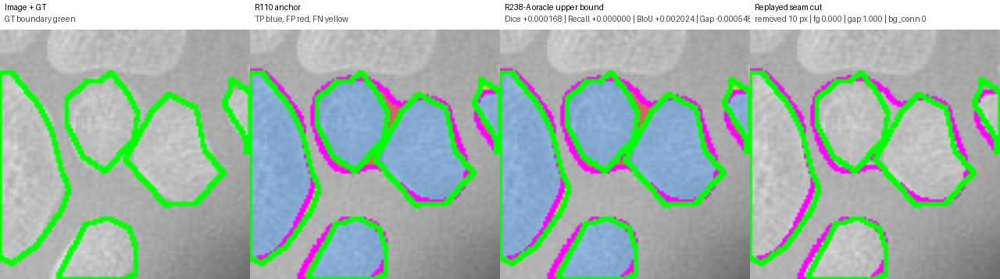
{
"anchor_boundary_f1": "0.4363768379016155",
"anchor_boundary_iou": "0.2790805665196192",
"anchor_component_count_mae": "1.0",
"anchor_component_delta_mean": "-1.0",
"anchor_dice": "0.9025088273555101",
"anchor_gap_region_fp_rate": "0.13884777722962233",
"anchor_iou": "0.822338119750745",
"anchor_precision": "0.9048630519843488",
"anchor_recall": "0.9001668211306766",
"cut_pixels": "10.0",
"delta_boundary_f1": "0.0024707794203631117",
"delta_boundary_iou": "0.002024354557446706",
"delta_component_count_mae": "0.0",
"delta_component_delta_mean": "0.0",
"delta_dice": "0.00016775257014045586",
"delta_gap_region_fp_rate": "-0.0005481554568875779",
"delta_iou": "0.00027858869833696787",
"delta_precision": "0.00033732080223092265",
"delta_recall": "0.0",
"edited": "1.0",
"image": "10375.png",
"num_accepted_cuts": "1.0",
"r238_boundary_f1": "0.43884761732197863",
"r238_boundary_iou": "0.2811049210770659",
"r238_component_count_mae": "1.0",
"r238_component_delta_mean": "-1.0",
"r238_dice": "0.9026765799256505",
"r238_gap_region_fp_rate": "0.13829962177273475",
"r238_iou": "0.822616708449082",
"r238_precision": "0.9052003727865797",
"r238_recall": "0.9001668211306766"
}
cut=23.0 px, Dice +0.000094, Recall +0.000000, BIoU +0.001829, Gap -0.000718, Cnt +0.000000
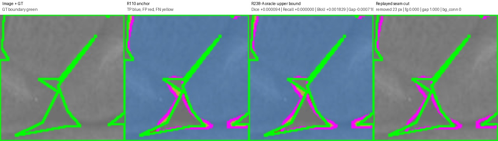
{
"anchor_boundary_f1": "0.3433874709976798",
"anchor_boundary_iou": "0.20728291316526612",
"anchor_component_count_mae": "4.0",
"anchor_component_delta_mean": "-4.0",
"anchor_dice": "0.933847512614007",
"anchor_gap_region_fp_rate": "0.23871088626569234",
"anchor_iou": "0.8759042666622923",
"anchor_precision": "0.9241499865867061",
"anchor_recall": "0.9437507180289333",
"cut_pixels": "23.0",
"delta_boundary_f1": "0.00250525399347179",
"delta_boundary_iou": "0.001828509181450333",
"delta_component_count_mae": "0.0",
"delta_component_delta_mean": "0.0",
"delta_dice": "9.391927443636039e-05",
"delta_gap_region_fp_rate": "-0.0007182561988632874",
"delta_iou": "0.00016526631172719686",
"delta_precision": "0.0001839757101069761",
"delta_recall": "0.0",
"edited": "1.0",
"image": "3460.png",
"num_accepted_cuts": "1.0",
"r238_boundary_f1": "0.3458927249911516",
"r238_boundary_iou": "0.20911142234671645",
"r238_component_count_mae": "4.0",
"r238_component_delta_mean": "-4.0",
"r238_dice": "0.9339414318884434",
"r238_gap_region_fp_rate": "0.23799263006682905",
"r238_iou": "0.8760695329740195",
"r238_precision": "0.9243339622968131",
"r238_recall": "0.9437507180289333"
}
cut=57.0 px, Dice +0.000161, Recall +0.000000, BIoU +0.001569, Gap -0.001540, Cnt +0.000000
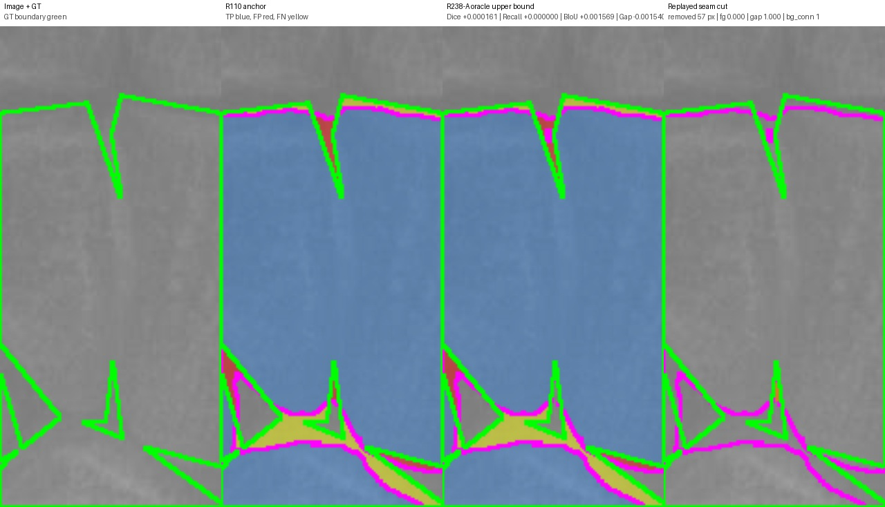
{
"anchor_boundary_f1": "0.23907398198795513",
"anchor_boundary_iou": "0.13576605691694643",
"anchor_component_count_mae": "1.0",
"anchor_component_delta_mean": "1.0",
"anchor_dice": "0.9155442446854182",
"anchor_gap_region_fp_rate": "0.30255121344792174",
"anchor_iou": "0.8442430594319955",
"anchor_precision": "0.9130541917440291",
"anchor_recall": "0.9180479163569695",
"cut_pixels": "57.0",
"delta_boundary_f1": "0.002429835437143424",
"delta_boundary_iou": "0.001569366280545742",
"delta_component_count_mae": "0.0",
"delta_component_delta_mean": "0.0",
"delta_dice": "0.00016120628794791259",
"delta_gap_region_fp_rate": "-0.0015404572725798427",
"delta_iou": "0.00027419078879586944",
"delta_precision": "0.00032071736032524",
"delta_recall": "0.0",
"edited": "1.0",
"image": "1901.png",
"num_accepted_cuts": "1.0",
"r238_boundary_f1": "0.24150381742509855",
"r238_boundary_iou": "0.13733542319749217",
"r238_component_count_mae": "1.0",
"r238_component_delta_mean": "1.0",
"r238_dice": "0.9157054509733661",
"r238_gap_region_fp_rate": "0.3010107561753419",
"r238_iou": "0.8445172502207914",
"r238_precision": "0.9133749091043544",
"r238_recall": "0.9180479163569695"
}
cut=24.0 px, Dice +0.000227, Recall +0.000000, BIoU +0.001504, Gap -0.001055, Cnt -1.000000
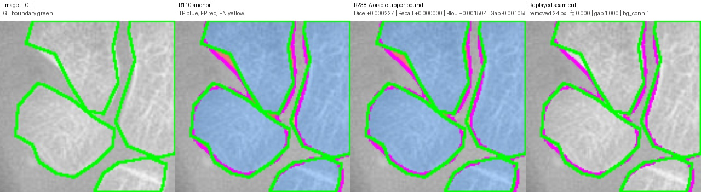
{
"anchor_boundary_f1": "0.4818888678171819",
"anchor_boundary_iou": "0.3174266083697689",
"anchor_component_count_mae": "1.0",
"anchor_component_delta_mean": "-1.0",
"anchor_dice": "0.9376082490836589",
"anchor_gap_region_fp_rate": "0.10738608901972846",
"anchor_iou": "0.8825447376402791",
"anchor_precision": "0.9499092040562322",
"anchor_recall": "0.9256218064695707",
"cut_pixels": "24.0",
"delta_boundary_f1": "0.0017316585982697363",
"delta_boundary_iou": "0.0015044605613000472",
"delta_component_count_mae": "-1.0",
"delta_component_delta_mean": "1.0",
"delta_dice": "0.00022664878508127373",
"delta_gap_region_fp_rate": "-0.0010545278790808077",
"delta_iou": "0.0004017044777606671",
"delta_precision": "0.0004653851204881043",
"delta_recall": "0.0",
"edited": "1.0",
"image": "6947.png",
"num_accepted_cuts": "1.0",
"r238_boundary_f1": "0.4836205264154516",
"r238_boundary_iou": "0.31893106893106893",
"r238_component_count_mae": "0.0",
"r238_component_delta_mean": "0.0",
"r238_dice": "0.9378348978687402",
"r238_gap_region_fp_rate": "0.10633156114064765",
"r238_iou": "0.8829464421180397",
"r238_precision": "0.9503745891767204",
"r238_recall": "0.9256218064695707"
}
cut=19.0 px, Dice +0.000223, Recall +0.000000, BIoU +0.001502, Gap -0.000935, Cnt +0.000000
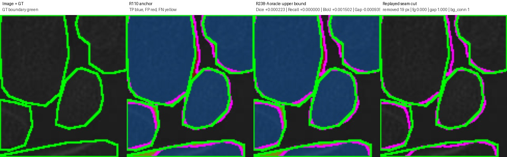
{
"anchor_boundary_f1": "0.48741455142811724",
"anchor_boundary_iou": "0.3222393497757848",
"anchor_component_count_mae": "2.0",
"anchor_component_delta_mean": "-2.0",
"anchor_dice": "0.9282843347910715",
"anchor_gap_region_fp_rate": "0.1255415517920441",
"anchor_iou": "0.8661666194924049",
"anchor_precision": "0.9326459084675166",
"anchor_recall": "0.9239633655394525",
"cut_pixels": "19.0",
"delta_boundary_f1": "0.0017164582508376602",
"delta_boundary_iou": "0.0015021611112837618",
"delta_component_count_mae": "0.0",
"delta_component_delta_mean": "0.0",
"delta_dice": "0.00022297882856969764",
"delta_gap_region_fp_rate": "-0.0009354076408034512",
"delta_iou": "0.00038835136442783025",
"delta_precision": "0.00045026736782838306",
"delta_recall": "0.0",
"edited": "1.0",
"image": "3354.png",
"num_accepted_cuts": "1.0",
"r238_boundary_f1": "0.4891310096789549",
"r238_boundary_iou": "0.32374151088706854",
"r238_component_count_mae": "2.0",
"r238_component_delta_mean": "-2.0",
"r238_dice": "0.9285073136196412",
"r238_gap_region_fp_rate": "0.12460614415124065",
"r238_iou": "0.8665549708568328",
"r238_precision": "0.933096175835345",
"r238_recall": "0.9239633655394525"
}
cut=58.0 px, Dice +0.000554, Recall +0.000000, BIoU +0.001485, Gap -0.002544, Cnt +0.000000
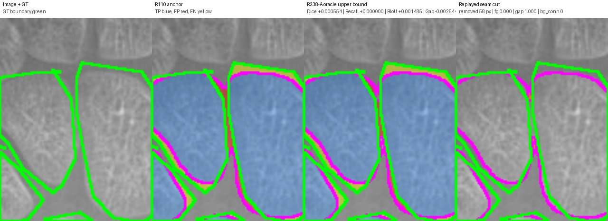
{
"anchor_boundary_f1": "0.3557485801555863",
"anchor_boundary_iou": "0.2163589922210612",
"anchor_component_count_mae": "2.0",
"anchor_component_delta_mean": "-2.0",
"anchor_dice": "0.9079994533163721",
"anchor_gap_region_fp_rate": "0.1456825856246985",
"anchor_iou": "0.8315009146047945",
"anchor_precision": "0.9269936674895353",
"anchor_recall": "0.8897679976923394",
"cut_pixels": "58.0",
"delta_boundary_f1": "0.0020051256596930744",
"delta_boundary_iou": "0.0014851320629172826",
"delta_component_count_mae": "0.0",
"delta_component_delta_mean": "0.0",
"delta_dice": "0.0005540018334790897",
"delta_gap_region_fp_rate": "-0.002543524974783995",
"delta_iou": "0.0009296422893975143",
"delta_precision": "0.0011555791844389818",
"delta_recall": "0.0",
"edited": "1.0",
"image": "8253.png",
"num_accepted_cuts": "1.0",
"r238_boundary_f1": "0.3577537058152794",
"r238_boundary_iou": "0.21784412428397848",
"r238_component_count_mae": "2.0",
"r238_component_delta_mean": "-2.0",
"r238_dice": "0.9085534551498512",
"r238_gap_region_fp_rate": "0.1431390606499145",
"r238_iou": "0.832430556894192",
"r238_precision": "0.9281492466739742",
"r238_recall": "0.8897679976923394"
}
cut=19.0 px, Dice +0.000195, Recall +0.000000, BIoU +0.001218, Gap -0.000977, Cnt +0.000000
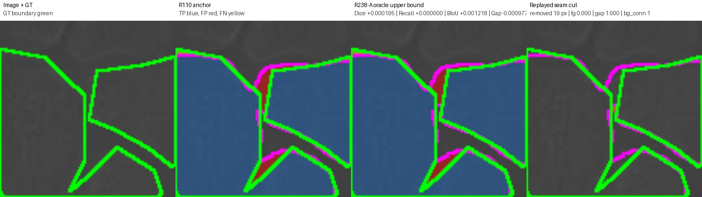
{
"anchor_boundary_f1": "0.3851315927440495",
"anchor_boundary_iou": "0.2384910070774625",
"anchor_component_count_mae": "3.0",
"anchor_component_delta_mean": "-3.0",
"anchor_dice": "0.9038387236073547",
"anchor_gap_region_fp_rate": "0.2981273793600165",
"anchor_iou": "0.8245490358697906",
"anchor_precision": "0.8570689655172414",
"anchor_recall": "0.9560075003605942",
"cut_pixels": "19.0",
"delta_boundary_f1": "0.001586748096004953",
"delta_boundary_iou": "0.0012181216071238954",
"delta_component_count_mae": "0.0",
"delta_component_delta_mean": "0.0",
"delta_dice": "0.00019519357742803223",
"delta_gap_region_fp_rate": "-0.0009774668175738244",
"delta_iou": "0.00032495554295752793",
"delta_precision": "0.00035109873320593454",
"delta_recall": "0.0",
"edited": "1.0",
"image": "2248.png",
"num_accepted_cuts": "1.0",
"r238_boundary_f1": "0.38671834084005446",
"r238_boundary_iou": "0.2397091286845864",
"r238_component_count_mae": "3.0",
"r238_component_delta_mean": "-3.0",
"r238_dice": "0.9040339171847828",
"r238_gap_region_fp_rate": "0.29714991254244266",
"r238_iou": "0.8248739914127481",
"r238_precision": "0.8574200642504474",
"r238_recall": "0.9560075003605942"
}
cut=29.0 px, Dice +0.000161, Recall +0.000000, BIoU +0.001139, Gap -0.001069, Cnt +0.000000
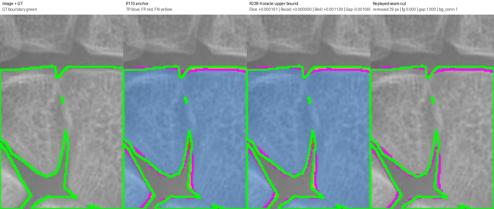
{
"anchor_boundary_f1": "0.42781883646010993",
"anchor_boundary_iou": "0.27211802709608984",
"anchor_component_count_mae": "2.0",
"anchor_component_delta_mean": "2.0",
"anchor_dice": "0.9436642909227766",
"anchor_gap_region_fp_rate": "0.16541353383458646",
"anchor_iou": "0.8933374899795137",
"anchor_precision": "0.9449534801554588",
"anchor_recall": "0.9423786145498109",
"cut_pixels": "29.0",
"delta_boundary_f1": "0.0014069822035281399",
"delta_boundary_iou": "0.0011394683247141768",
"delta_component_count_mae": "0.0",
"delta_component_delta_mean": "0.0",
"delta_dice": "0.00016095624966483424",
"delta_gap_region_fp_rate": "-0.0010688485920684054",
"delta_iou": "0.0002885360598906539",
"delta_precision": "0.00032284788026182287",
"delta_recall": "0.0",
"edited": "1.0",
"image": "6605.png",
"num_accepted_cuts": "1.0",
"r238_boundary_f1": "0.42922581866363807",
"r238_boundary_iou": "0.273257495420804",
"r238_component_count_mae": "2.0",
"r238_component_delta_mean": "2.0",
"r238_dice": "0.9438252471724414",
"r238_gap_region_fp_rate": "0.16434468524251805",
"r238_iou": "0.8936260260394043",
"r238_precision": "0.9452763280357206",
"r238_recall": "0.9423786145498109"
}
cut=28.0 px, Dice +0.000694, Recall +0.000000, BIoU +0.001091, Gap -0.002562, Cnt +0.000000
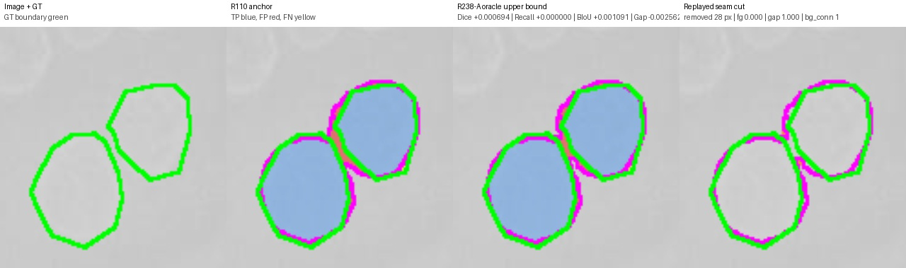
{
"anchor_boundary_f1": "0.16310257339615802",
"anchor_boundary_iou": "0.08879242304656669",
"anchor_component_count_mae": "1.0",
"anchor_component_delta_mean": "-1.0",
"anchor_dice": "0.6380715782936107",
"anchor_gap_region_fp_rate": "0.05993229023698417",
"anchor_iou": "0.4685059567918828",
"anchor_precision": "0.9059744268077602",
"anchor_recall": "0.49245056920311564",
"cut_pixels": "28.0",
"delta_boundary_f1": "0.0018384331051663205",
"delta_boundary_iou": "0.0010907943789680158",
"delta_component_count_mae": "0.0",
"delta_component_delta_mean": "0.0",
"delta_dice": "0.000694256788381975",
"delta_gap_region_fp_rate": "-0.0025619910330313828",
"delta_iou": "0.0007489675586738742",
"delta_precision": "0.0028048743864016457",
"delta_recall": "0.0",
"edited": "1.0",
"image": "1418.png",
"num_accepted_cuts": "1.0",
"r238_boundary_f1": "0.16494100650132434",
"r238_boundary_iou": "0.0898832174255347",
"r238_component_count_mae": "1.0",
"r238_component_delta_mean": "-1.0",
"r238_dice": "0.6387658350819927",
"r238_gap_region_fp_rate": "0.057370299203952785",
"r238_iou": "0.46925492435055666",
"r238_precision": "0.9087793011941618",
"r238_recall": "0.49245056920311564"
}
cut=58.0 px, Dice +0.000230, Recall +0.000000, BIoU +0.001088, Gap -0.001808, Cnt +0.000000
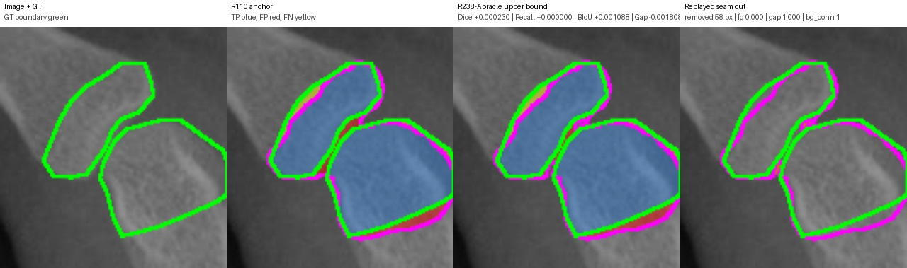
{
"anchor_boundary_f1": "0.2926949806949807",
"anchor_boundary_iou": "0.17143684191482433",
"anchor_component_count_mae": "2.0",
"anchor_component_delta_mean": "-2.0",
"anchor_dice": "0.921664816297023",
"anchor_gap_region_fp_rate": "0.3112669471715755",
"anchor_iou": "0.8547108823177302",
"anchor_precision": "0.9064293331979076",
"anchor_recall": "0.9374212184873949",
"cut_pixels": "58.0",
"delta_boundary_f1": "0.0015839558095326889",
"delta_boundary_iou": "0.0010878122050326233",
"delta_component_count_mae": "0.0",
"delta_component_delta_mean": "0.0",
"delta_dice": "0.0002300909031422993",
"delta_gap_region_fp_rate": "-0.0018076983013869397",
"delta_iou": "0.0003958353455801866",
"delta_precision": "0.00044520104773970726",
"delta_recall": "0.0",
"edited": "1.0",
"image": "1452.png",
"num_accepted_cuts": "1.0",
"r238_boundary_f1": "0.29427893650451337",
"r238_boundary_iou": "0.17252465411985696",
"r238_component_count_mae": "2.0",
"r238_component_delta_mean": "-2.0",
"r238_dice": "0.9218949072001653",
"r238_gap_region_fp_rate": "0.30945924887018855",
"r238_iou": "0.8551067176633104",
"r238_precision": "0.9068745342456473",
"r238_recall": "0.9374212184873949"
}
cut=19.0 px, Dice +0.000156, Recall +0.000000, BIoU +0.001070, Gap -0.000867, Cnt +0.000000
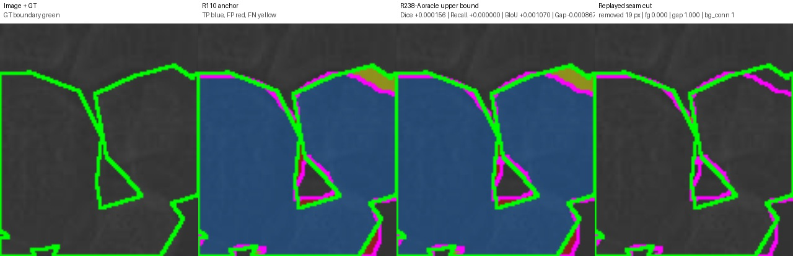
{
"anchor_boundary_f1": "0.35925601144597774",
"anchor_boundary_iou": "0.2189592123769339",
"anchor_component_count_mae": "0.0",
"anchor_component_delta_mean": "0.0",
"anchor_dice": "0.9140226005941856",
"anchor_gap_region_fp_rate": "0.22216645373243293",
"anchor_iou": "0.8416589526580269",
"anchor_precision": "0.9078055912138069",
"anchor_recall": "0.9203253502033438",
"cut_pixels": "19.0",
"delta_boundary_f1": "0.0014390155162751217",
"delta_boundary_iou": "0.0010700273891479928",
"delta_component_count_mae": "0.0",
"delta_component_delta_mean": "0.0",
"delta_dice": "0.00015590094090600637",
"delta_gap_region_fp_rate": "-0.0008669465230881634",
"delta_iou": "0.000264423170800554",
"delta_precision": "0.0003076264287407149",
"delta_recall": "0.0",
"edited": "1.0",
"image": "2044.png",
"num_accepted_cuts": "1.0",
"r238_boundary_f1": "0.36069502696225286",
"r238_boundary_iou": "0.22002923976608188",
"r238_component_count_mae": "0.0",
"r238_component_delta_mean": "0.0",
"r238_dice": "0.9141785015350916",
"r238_gap_region_fp_rate": "0.22129950720934477",
"r238_iou": "0.8419233758288275",
"r238_precision": "0.9081132176425476",
"r238_recall": "0.9203253502033438"
}
cut=38.0 px, Dice +0.000119, Recall +0.000000, BIoU +0.001066, Gap -0.000985, Cnt +0.000000
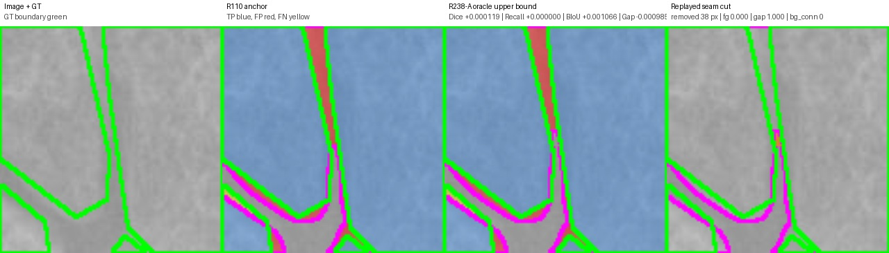
{
"anchor_boundary_f1": "0.1962603992202301",
"anchor_boundary_iou": "0.10880750144609858",
"anchor_component_count_mae": "3.0",
"anchor_component_delta_mean": "-3.0",
"anchor_dice": "0.8883331926507414",
"anchor_gap_region_fp_rate": "0.3855643384735001",
"anchor_iou": "0.7991002220970773",
"anchor_precision": "0.8636798840119818",
"anchor_recall": "0.9144352888361114",
"cut_pixels": "38.0",
"delta_boundary_f1": "0.0017322514680823131",
"delta_boundary_iou": "0.0010658854543153518",
"delta_component_count_mae": "0.0",
"delta_component_delta_mean": "0.0",
"delta_dice": "0.00011874023469249373",
"delta_gap_region_fp_rate": "-0.0009848386678761312",
"delta_iou": "0.0001921874446344507",
"delta_precision": "0.00022451044979243662",
"delta_recall": "0.0",
"edited": "1.0",
"image": "1585.png",
"num_accepted_cuts": "1.0",
"r238_boundary_f1": "0.1979926506883124",
"r238_boundary_iou": "0.10987338690041393",
"r238_component_count_mae": "3.0",
"r238_component_delta_mean": "-3.0",
"r238_dice": "0.8884519328854339",
"r238_gap_region_fp_rate": "0.38457949980562395",
"r238_iou": "0.7992924095417118",
"r238_precision": "0.8639043944617742",
"r238_recall": "0.9144352888361114"
}
cut=32.0 px, Dice +0.000094, Recall +0.000000, BIoU +0.001030, Gap -0.000789, Cnt +0.000000
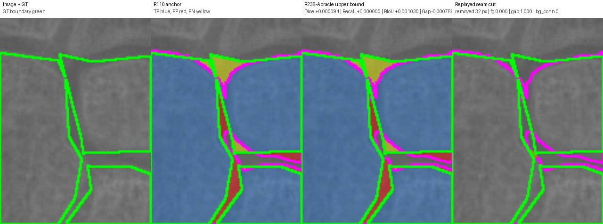
{
"anchor_boundary_f1": "0.22288934534154947",
"anchor_boundary_iou": "0.1254223223282556",
"anchor_component_count_mae": "4.0",
"anchor_component_delta_mean": "-4.0",
"anchor_dice": "0.903463445404243",
"anchor_gap_region_fp_rate": "0.2719449649866851",
"anchor_iou": "0.8239246029853593",
"anchor_precision": "0.9076968542720169",
"anchor_recall": "0.8992693416267071",
"cut_pixels": "32.0",
"delta_boundary_f1": "0.0016251538953327982",
"delta_boundary_iou": "0.0010301320231790867",
"delta_component_count_mae": "0.0",
"delta_component_delta_mean": "0.0",
"delta_dice": "9.449991093835042e-05",
"delta_gap_region_fp_rate": "-0.000789032448959448",
"delta_iou": "0.00015720001964902863",
"delta_precision": "0.00019079532926535858",
"delta_recall": "0.0",
"edited": "1.0",
"image": "1694.png",
"num_accepted_cuts": "1.0",
"r238_boundary_f1": "0.22451449923688227",
"r238_boundary_iou": "0.12645245435143468",
"r238_component_count_mae": "4.0",
"r238_component_delta_mean": "-4.0",
"r238_dice": "0.9035579453151813",
"r238_gap_region_fp_rate": "0.27115593253772563",
"r238_iou": "0.8240818030050083",
"r238_precision": "0.9078876496012822",
"r238_recall": "0.8992693416267071"
}
cut=17.0 px, Dice +0.000108, Recall +0.000000, BIoU +0.000959, Gap -0.000629, Cnt +0.000000
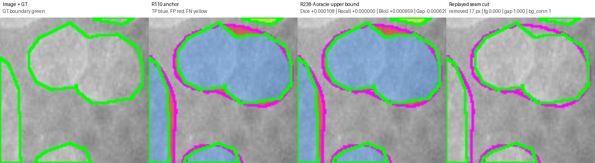
{
"anchor_boundary_f1": "0.2801654986067719",
"anchor_boundary_iou": "0.16290259230164963",
"anchor_component_count_mae": "4.0",
"anchor_component_delta_mean": "-4.0",
"anchor_dice": "0.8649994491572105",
"anchor_gap_region_fp_rate": "0.23409998520928857",
"anchor_iou": "0.7621136822487964",
"anchor_precision": "0.891686856450636",
"anchor_recall": "0.8398630820794409",
"cut_pixels": "17.0",
"delta_boundary_f1": "0.0014165557025551112",
"delta_boundary_iou": "0.0009586237752998716",
"delta_component_count_mae": "0.0",
"delta_component_delta_mean": "0.0",
"delta_dice": "0.00010801532735660313",
"delta_gap_region_fp_rate": "-0.0006286052359118499",
"delta_iou": "0.00016771216680988577",
"delta_precision": "0.00022959690652746279",
"delta_recall": "0.0",
"edited": "1.0",
"image": "4193.png",
"num_accepted_cuts": "1.0",
"r238_boundary_f1": "0.28158205430932703",
"r238_boundary_iou": "0.1638612160769495",
"r238_component_count_mae": "4.0",
"r238_component_delta_mean": "-4.0",
"r238_dice": "0.8651074644845671",
"r238_gap_region_fp_rate": "0.23347137997337672",
"r238_iou": "0.7622813944156063",
"r238_precision": "0.8919164533571634",
"r238_recall": "0.8398630820794409"
}
cut=9.0 px, Dice +0.000128, Recall +0.000000, BIoU +0.000864, Gap -0.000504, Cnt +0.000000
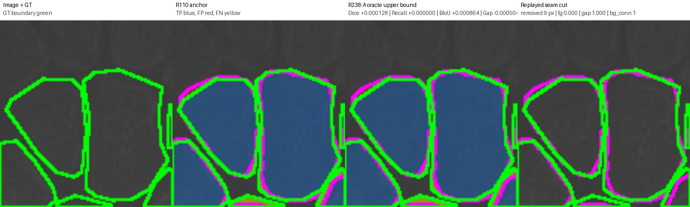
{
"anchor_boundary_f1": "0.47867191896454697",
"anchor_boundary_iou": "0.31464082266775173",
"anchor_component_count_mae": "0.0",
"anchor_component_delta_mean": "0.0",
"anchor_dice": "0.9127124700910475",
"anchor_gap_region_fp_rate": "0.09625189086223318",
"anchor_iou": "0.8394398399542726",
"anchor_precision": "0.94174228093238",
"anchor_recall": "0.8854188647393965",
"cut_pixels": "9.0",
"delta_boundary_f1": "0.0009996775039903816",
"delta_boundary_iou": "0.0008644295884991937",
"delta_component_count_mae": "0.0",
"delta_component_delta_mean": "0.0",
"delta_dice": "0.00012764614284987985",
"delta_gap_region_fp_rate": "-0.0005042299288475632",
"delta_iou": "0.00021597320144051135",
"delta_precision": "0.00027183067762637236",
"delta_recall": "0.0",
"edited": "1.0",
"image": "3678.png",
"num_accepted_cuts": "1.0",
"r238_boundary_f1": "0.47967159646853735",
"r238_boundary_iou": "0.3155052522562509",
"r238_component_count_mae": "0.0",
"r238_component_delta_mean": "0.0",
"r238_dice": "0.9128401162338974",
"r238_gap_region_fp_rate": "0.09574766093338562",
"r238_iou": "0.8396558131557131",
"r238_precision": "0.9420141116100064",
"r238_recall": "0.8854188647393965"
}
cut=8.0 px, Dice +0.000034, Recall +0.000000, BIoU +0.000838, Gap -0.000284, Cnt +0.000000
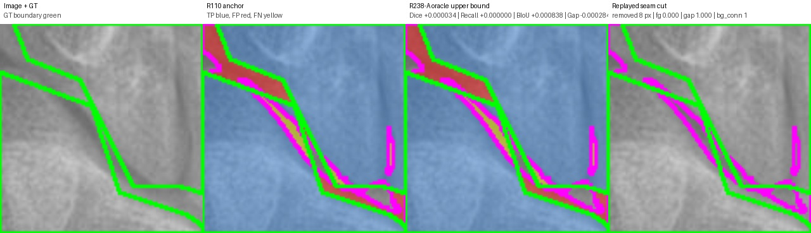
{
"anchor_boundary_f1": "0.18030297680002824",
"anchor_boundary_iou": "0.0990840642707444",
"anchor_component_count_mae": "1.0",
"anchor_component_delta_mean": "1.0",
"anchor_dice": "0.8803002812736994",
"anchor_gap_region_fp_rate": "0.40428175814812184",
"anchor_iou": "0.7861931788953858",
"anchor_precision": "0.8563530752133879",
"anchor_recall": "0.9056253456585289",
"cut_pixels": "8.0",
"delta_boundary_f1": "0.0013869155972199565",
"delta_boundary_iou": "0.000838326105662271",
"delta_component_count_mae": "0.0",
"delta_component_delta_mean": "0.0",
"delta_dice": "3.380407166608812e-05",
"delta_gap_region_fp_rate": "-0.0002840303912518549",
"delta_iou": "5.3927338001913405e-05",
"delta_precision": "6.398214881020436e-05",
"delta_recall": "0.0",
"edited": "1.0",
"image": "5355.png",
"num_accepted_cuts": "1.0",
"r238_boundary_f1": "0.1816898923972482",
"r238_boundary_iou": "0.09992239037640667",
"r238_component_count_mae": "1.0",
"r238_component_delta_mean": "1.0",
"r238_dice": "0.8803340853453655",
"r238_gap_region_fp_rate": "0.40399772775687",
"r238_iou": "0.7862471062333877",
"r238_precision": "0.8564170573621981",
"r238_recall": "0.9056253456585289"
}
cut=39.0 px, Dice +0.000113, Recall +0.000000, BIoU +0.000822, Gap -0.000957, Cnt +0.000000
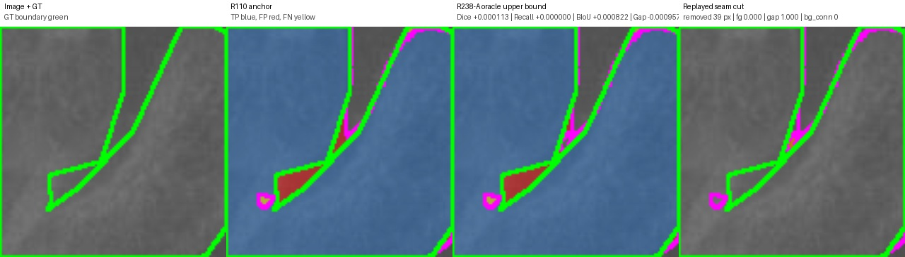
{
"anchor_boundary_f1": "0.28828642917945674",
"anchor_boundary_iou": "0.168419783598059",
"anchor_component_count_mae": "5.0",
"anchor_component_delta_mean": "-5.0",
"anchor_dice": "0.9199350663623034",
"anchor_gap_region_fp_rate": "0.2914469327184871",
"anchor_iou": "0.8517405182889604",
"anchor_precision": "0.9089780899608462",
"anchor_recall": "0.9311594202898551",
"cut_pixels": "39.0",
"delta_boundary_f1": "0.0012028437491753974",
"delta_boundary_iou": "0.0008216414026938346",
"delta_component_count_mae": "0.0",
"delta_component_delta_mean": "0.0",
"delta_dice": "0.00011266633459394715",
"delta_gap_region_fp_rate": "-0.0009566091883538852",
"delta_iou": "0.0001931833684981621",
"delta_precision": "0.0002200232467010066",
"delta_recall": "0.0",
"edited": "1.0",
"image": "3493.png",
"num_accepted_cuts": "1.0",
"r238_boundary_f1": "0.28948927292863214",
"r238_boundary_iou": "0.16924142500075284",
"r238_component_count_mae": "5.0",
"r238_component_delta_mean": "-5.0",
"r238_dice": "0.9200477326968973",
"r238_gap_region_fp_rate": "0.2904903235301332",
"r238_iou": "0.8519337016574585",
"r238_precision": "0.9091981132075472",
"r238_recall": "0.9311594202898551"
}
cut=10.0 px, Dice +0.000104, Recall +0.000000, BIoU +0.000793, Gap -0.000430, Cnt +0.000000
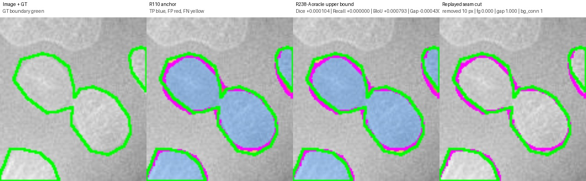
{
"anchor_boundary_f1": "0.4933157597439277",
"anchor_boundary_iou": "0.32741814546363407",
"anchor_component_count_mae": "0.0",
"anchor_component_delta_mean": "0.0",
"anchor_dice": "0.9313014460511679",
"anchor_gap_region_fp_rate": "0.11311750290210242",
"anchor_iou": "0.8714351138681877",
"anchor_precision": "0.9398109691758525",
"anchor_recall": "0.922944639195714",
"cut_pixels": "10.0",
"delta_boundary_f1": "0.0008992717676892248",
"delta_boundary_iou": "0.0007927490890895506",
"delta_component_count_mae": "0.0",
"delta_component_delta_mean": "0.0",
"delta_dice": "0.0001036045662533569",
"delta_gap_region_fp_rate": "-0.0004299410980695695",
"delta_iou": "0.00018144314022405794",
"delta_precision": "0.00021103697688817924",
"delta_recall": "0.0",
"edited": "1.0",
"image": "15369.png",
"num_accepted_cuts": "1.0",
"r238_boundary_f1": "0.49421503151161694",
"r238_boundary_iou": "0.3282108945527236",
"r238_component_count_mae": "0.0",
"r238_component_delta_mean": "0.0",
"r238_dice": "0.9314050506174213",
"r238_gap_region_fp_rate": "0.11268756180403285",
"r238_iou": "0.8716165570084118",
"r238_precision": "0.9400220061527407",
"r238_recall": "0.922944639195714"
}
cut=4.0 px, Dice +0.000043, Recall +0.000000, BIoU +0.000781, Gap -0.000179, Cnt +0.000000
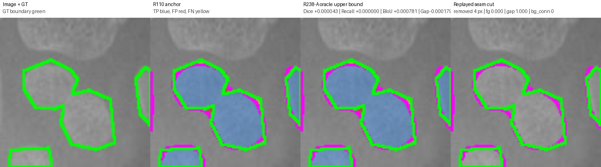
{
"anchor_boundary_f1": "0.4635222933095274",
"anchor_boundary_iou": "0.30167850225952225",
"anchor_component_count_mae": "0.0",
"anchor_component_delta_mean": "0.0",
"anchor_dice": "0.909277112688491",
"anchor_gap_region_fp_rate": "0.14733360153770506",
"anchor_iou": "0.8336463122450302",
"anchor_precision": "0.920711356918089",
"anchor_recall": "0.89812338674046",
"cut_pixels": "4.0",
"delta_boundary_f1": "0.0009209397545491549",
"delta_boundary_iou": "0.0007806728518183759",
"delta_component_count_mae": "0.0",
"delta_component_delta_mean": "0.0",
"delta_dice": "4.28162083505601e-05",
"delta_gap_region_fp_rate": "-0.00017880291448749142",
"delta_iou": "7.198241228234536e-05",
"delta_precision": "8.78038677206705e-05",
"delta_recall": "0.0",
"edited": "1.0",
"image": "6918.png",
"num_accepted_cuts": "1.0",
"r238_boundary_f1": "0.46444323306407653",
"r238_boundary_iou": "0.30245917511134063",
"r238_component_count_mae": "0.0",
"r238_component_delta_mean": "0.0",
"r238_dice": "0.9093199288968415",
"r238_gap_region_fp_rate": "0.14715479862321756",
"r238_iou": "0.8337182946573125",
"r238_precision": "0.9207991607858097",
"r238_recall": "0.89812338674046"
}
cut=16.0 px, Dice +0.000104, Recall +0.000000, BIoU +0.000704, Gap -0.000587, Cnt +0.000000
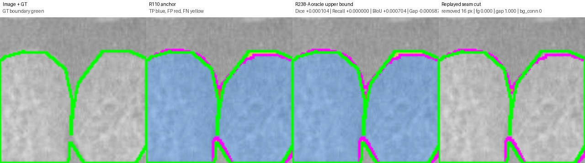
{
"anchor_boundary_f1": "0.25642067620286085",
"anchor_boundary_iou": "0.14706567845988905",
"anchor_component_count_mae": "0.0",
"anchor_component_delta_mean": "0.0",
"anchor_dice": "0.8991215703285977",
"anchor_gap_region_fp_rate": "0.08288711215433141",
"anchor_iou": "0.8167310268736702",
"anchor_precision": "0.9641063011659637",
"anchor_recall": "0.8423441119494981",
"cut_pixels": "16.0",
"delta_boundary_f1": "0.0010701885961647006",
"delta_boundary_iou": "0.0007044879038743956",
"delta_component_count_mae": "0.0",
"delta_component_delta_mean": "0.0",
"delta_dice": "0.00010402060119929502",
"delta_gap_region_fp_rate": "-0.0005868114134819913",
"delta_iou": "0.00017167682322150046",
"delta_precision": "0.000239232332795547",
"delta_recall": "0.0",
"edited": "1.0",
"image": "4047.png",
"num_accepted_cuts": "1.0",
"r238_boundary_f1": "0.25749086479902555",
"r238_boundary_iou": "0.14777016636376344",
"r238_component_count_mae": "0.0",
"r238_component_delta_mean": "0.0",
"r238_dice": "0.899225590929797",
"r238_gap_region_fp_rate": "0.08230030074084942",
"r238_iou": "0.8169027036968917",
"r238_precision": "0.9643455334987593",
"r238_recall": "0.8423441119494981"
}
cut=2.0 px, Dice +0.000028, Recall +0.000000, BIoU +0.000665, Gap -0.000104, Cnt +0.000000
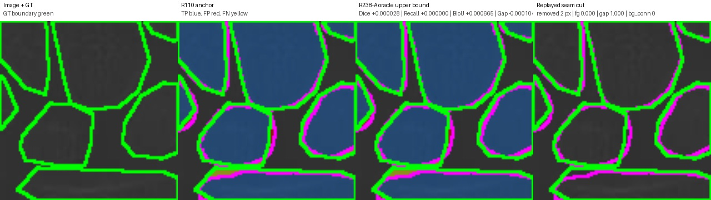
{
"anchor_boundary_f1": "0.4931293463143255",
"anchor_boundary_iou": "0.32725393192054936",
"anchor_component_count_mae": "0.0",
"anchor_component_delta_mean": "0.0",
"anchor_dice": "0.9218408477667737",
"anchor_gap_region_fp_rate": "0.06664932362122789",
"anchor_iou": "0.855013701694536",
"anchor_precision": "0.9597903195429719",
"anchor_recall": "0.8867782256895101",
"cut_pixels": "2.0",
"delta_boundary_f1": "0.0007541056429699045",
"delta_boundary_iou": "0.0006645499520047116",
"delta_component_count_mae": "0.0",
"delta_component_delta_mean": "0.0",
"delta_dice": "2.779266013741566e-05",
"delta_gap_region_fp_rate": "-0.00010405827263267053",
"delta_iou": "4.781955826038686e-05",
"delta_precision": "6.025805622444924e-05",
"delta_recall": "0.0",
"edited": "1.0",
"image": "3567.png",
"num_accepted_cuts": "1.0",
"r238_boundary_f1": "0.4938834519572954",
"r238_boundary_iou": "0.32791848187255407",
"r238_component_count_mae": "0.0",
"r238_component_delta_mean": "0.0",
"r238_dice": "0.9218686404269111",
"r238_gap_region_fp_rate": "0.06654526534859521",
"r238_iou": "0.8550615212527964",
"r238_precision": "0.9598505775991963",
"r238_recall": "0.8867782256895101"
}
cut=3.0 px, Dice +0.000024, Recall +0.000000, BIoU +0.000655, Gap -0.000130, Cnt +0.000000
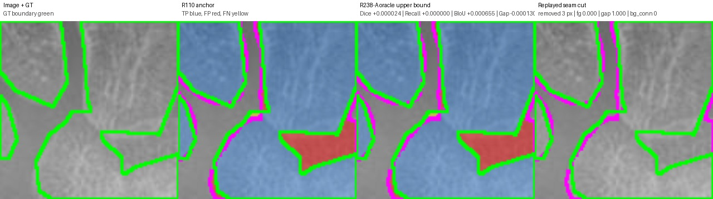
{
"anchor_boundary_f1": "0.4076344385622736",
"anchor_boundary_iou": "0.25599300087489063",
"anchor_component_count_mae": "1.0",
"anchor_component_delta_mean": "1.0",
"anchor_dice": "0.8741845467526529",
"anchor_gap_region_fp_rate": "0.1957871878393051",
"anchor_iou": "0.7764900936748735",
"anchor_precision": "0.8566516068848201",
"anchor_recall": "0.8924501695948779",
"cut_pixels": "3.0",
"delta_boundary_f1": "0.0008299913416662807",
"delta_boundary_iou": "0.0006550047234298861",
"delta_component_count_mae": "0.0",
"delta_component_delta_mean": "0.0",
"delta_dice": "2.4476449333232786e-05",
"delta_gap_region_fp_rate": "-0.00013029315960910726",
"delta_iou": "3.862366164320008e-05",
"delta_precision": "4.701022207975747e-05",
"delta_recall": "0.0",
"edited": "1.0",
"image": "11852.png",
"num_accepted_cuts": "1.0",
"r238_boundary_f1": "0.4084644299039399",
"r238_boundary_iou": "0.2566480055983205",
"r238_component_count_mae": "1.0",
"r238_component_delta_mean": "1.0",
"r238_dice": "0.8742090232019861",
"r238_gap_region_fp_rate": "0.195656894679696",
"r238_iou": "0.7765287173365167",
"r238_precision": "0.8566986171068999",
"r238_recall": "0.8924501695948779"
}
cut=56.0 px, Dice +0.000194, Recall +0.000000, BIoU +0.000653, Gap -0.001571, Cnt +0.000000
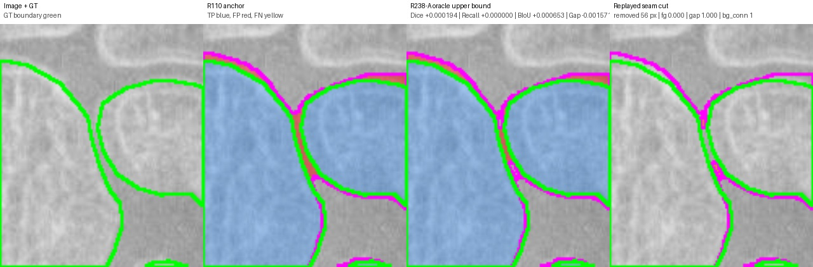
{
"anchor_boundary_f1": "0.2629297721548644",
"anchor_boundary_iou": "0.15136392757190545",
"anchor_component_count_mae": "1.0",
"anchor_component_delta_mean": "1.0",
"anchor_dice": "0.9196481734110146",
"anchor_gap_region_fp_rate": "0.11997531487559258",
"anchor_iou": "0.8512487791265523",
"anchor_precision": "0.9636778631621347",
"anchor_recall": "0.8794660554558494",
"cut_pixels": "56.0",
"delta_boundary_f1": "0.0009842616009027028",
"delta_boundary_iou": "0.0006527575964599963",
"delta_component_count_mae": "0.0",
"delta_component_delta_mean": "0.0",
"delta_dice": "0.00019411952307568647",
"delta_gap_region_fp_rate": "-0.0015708715531992518",
"delta_iou": "0.00033269542748026737",
"delta_precision": "0.0004264027649676372",
"delta_recall": "0.0",
"edited": "1.0",
"image": "3249.png",
"num_accepted_cuts": "1.0",
"r238_boundary_f1": "0.2639140337557671",
"r238_boundary_iou": "0.15201668516836545",
"r238_component_count_mae": "1.0",
"r238_component_delta_mean": "1.0",
"r238_dice": "0.9198422929340903",
"r238_gap_region_fp_rate": "0.11840444332239333",
"r238_iou": "0.8515814745540325",
"r238_precision": "0.9641042659271023",
"r238_recall": "0.8794660554558494"
}
cut=4.0 px, Dice +0.000072, Recall +0.000000, BIoU +0.000549, Gap -0.000279, Cnt +0.000000
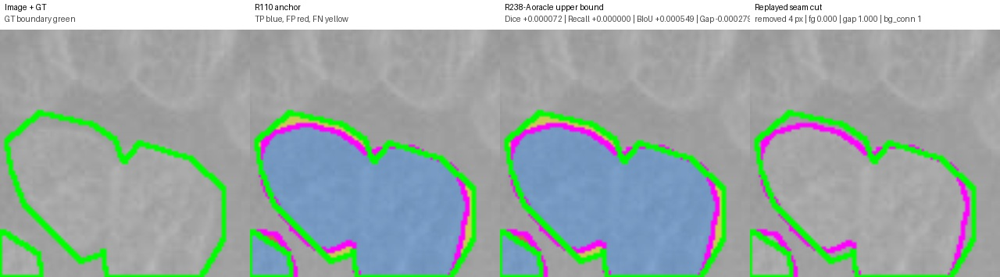
{
"anchor_boundary_f1": "0.22177136168552478",
"anchor_boundary_iou": "0.12471476215552045",
"anchor_component_count_mae": "4.0",
"anchor_component_delta_mean": "4.0",
"anchor_dice": "0.8097185683019035",
"anchor_gap_region_fp_rate": "0.07493558047217773",
"anchor_iou": "0.6802748885586924",
"anchor_precision": "0.8854131412270947",
"anchor_recall": "0.7459470468431771",
"cut_pixels": "4.0",
"delta_boundary_f1": "0.0008669096304905199",
"delta_boundary_iou": "0.0005485805411087757",
"delta_component_count_mae": "0.0",
"delta_component_delta_mean": "0.0",
"delta_dice": "7.16105656373145e-05",
"delta_gap_region_fp_rate": "-0.000278570931123337",
"delta_iou": "0.00010109598581642398",
"delta_precision": "0.00017126807703027325",
"delta_recall": "0.0",
"edited": "1.0",
"image": "1399.png",
"num_accepted_cuts": "1.0",
"r238_boundary_f1": "0.2226382713160153",
"r238_boundary_iou": "0.12526334269662923",
"r238_component_count_mae": "4.0",
"r238_component_delta_mean": "4.0",
"r238_dice": "0.8097901788675408",
"r238_gap_region_fp_rate": "0.07465700954105439",
"r238_iou": "0.6803759845445089",
"r238_precision": "0.885584409304125",
"r238_recall": "0.7459470468431771"
}
cut=5.0 px, Dice +0.000055, Recall +0.000000, BIoU +0.000535, Gap -0.000235, Cnt +0.000000
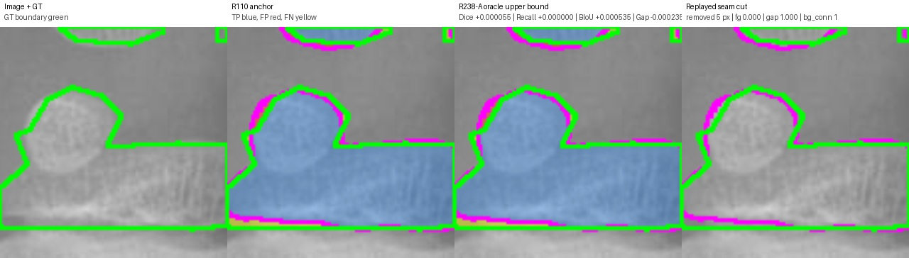
{
"anchor_boundary_f1": "0.35788797945755096",
"anchor_boundary_iou": "0.2179437060203284",
"anchor_component_count_mae": "1.0",
"anchor_component_delta_mean": "-1.0",
"anchor_dice": "0.9018459986963634",
"anchor_gap_region_fp_rate": "0.05983830027263326",
"anchor_iou": "0.8212381848317878",
"anchor_precision": "0.966445252780853",
"anchor_recall": "0.8453415719456805",
"cut_pixels": "5.0",
"delta_boundary_f1": "0.000721646210898208",
"delta_boundary_iou": "0.0005354755786811938",
"delta_component_count_mae": "0.0",
"delta_component_delta_mean": "0.0",
"delta_dice": "5.545999057232631e-05",
"delta_gap_region_fp_rate": "-0.0002350286734981652",
"delta_iou": "9.198250317332679e-05",
"delta_precision": "0.00012738845501025775",
"delta_recall": "0.0",
"edited": "1.0",
"image": "15446.png",
"num_accepted_cuts": "1.0",
"r238_boundary_f1": "0.3586096256684492",
"r238_boundary_iou": "0.2184791815990096",
"r238_component_count_mae": "1.0",
"r238_component_delta_mean": "-1.0",
"r238_dice": "0.9019014586869357",
"r238_gap_region_fp_rate": "0.059603271599135095",
"r238_iou": "0.8213301673349611",
"r238_precision": "0.9665726412358633",
"r238_recall": "0.8453415719456805"
}
cut=4.0 px, Dice +0.000014, Recall +0.000000, BIoU +0.000511, Gap -0.000109, Cnt +0.000000
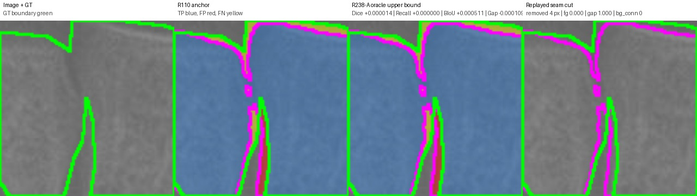
{
"anchor_boundary_f1": "0.21280542592968318",
"anchor_boundary_iou": "0.11907233214401557",
"anchor_component_count_mae": "2.0",
"anchor_component_delta_mean": "-2.0",
"anchor_dice": "0.9040244280075417",
"anchor_gap_region_fp_rate": "0.19723747892761978",
"anchor_iou": "0.8248581912861853",
"anchor_precision": "0.9315077345611696",
"anchor_recall": "0.8781163856779519",
"cut_pixels": "4.0",
"delta_boundary_f1": "0.0008160578908214533",
"delta_boundary_iou": "0.0005112174148842741",
"delta_component_count_mae": "0.0",
"delta_component_delta_mean": "0.0",
"delta_dice": "1.417449409479854e-05",
"delta_gap_region_fp_rate": "-0.0001087606721409673",
"delta_iou": "2.3601599212774715e-05",
"delta_precision": "3.009936859910134e-05",
"delta_recall": "0.0",
"edited": "1.0",
"image": "1736.png",
"num_accepted_cuts": "1.0",
"r238_boundary_f1": "0.21362148382050464",
"r238_boundary_iou": "0.11958354955889984",
"r238_component_count_mae": "2.0",
"r238_component_delta_mean": "-2.0",
"r238_dice": "0.9040386025016365",
"r238_gap_region_fp_rate": "0.1971287182554788",
"r238_iou": "0.8248817928853981",
"r238_precision": "0.9315378339297687",
"r238_recall": "0.8781163856779519"
}
cut=4.0 px, Dice +0.000055, Recall +0.000000, BIoU +0.000430, Gap -0.000206, Cnt +0.000000
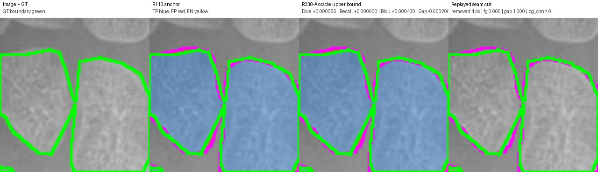
{
"anchor_boundary_f1": "0.49643203744933495",
"anchor_boundary_iou": "0.3301693370795049",
"anchor_component_count_mae": "1.0",
"anchor_component_delta_mean": "1.0",
"anchor_dice": "0.9165367550065955",
"anchor_gap_region_fp_rate": "0.12797357964807266",
"anchor_iou": "0.8459324847814056",
"anchor_precision": "0.92432350718065",
"anchor_recall": "0.9088801022683355",
"cut_pixels": "4.0",
"delta_boundary_f1": "0.00048577076984313017",
"delta_boundary_iou": "0.0004298882565625384",
"delta_component_count_mae": "0.0",
"delta_component_delta_mean": "0.0",
"delta_dice": "5.495813125899751e-05",
"delta_gap_region_fp_rate": "-0.00020640899943236146",
"delta_iou": "9.363875191292781e-05",
"delta_precision": "0.00011179867644528496",
"delta_recall": "0.0",
"edited": "1.0",
"image": "12627.png",
"num_accepted_cuts": "1.0",
"r238_boundary_f1": "0.4969178082191781",
"r238_boundary_iou": "0.33059922533606745",
"r238_component_count_mae": "1.0",
"r238_component_delta_mean": "1.0",
"r238_dice": "0.9165917131378545",
"r238_gap_region_fp_rate": "0.1277671706486403",
"r238_iou": "0.8460261235333185",
"r238_precision": "0.9244353058570953",
"r238_recall": "0.9088801022683355"
}
cut=5.0 px, Dice +0.000037, Recall +0.000000, BIoU +0.000421, Gap -0.000188, Cnt +0.000000
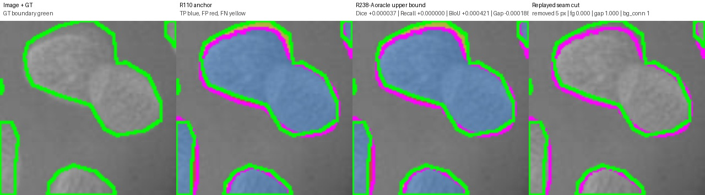
{
"anchor_boundary_f1": "0.44864",
"anchor_boundary_iou": "0.2891914191419142",
"anchor_component_count_mae": "2.0",
"anchor_component_delta_mean": "-2.0",
"anchor_dice": "0.937545553578846",
"anchor_gap_region_fp_rate": "0.19222218035196142",
"anchor_iou": "0.8824336485549474",
"anchor_precision": "0.9203286558345642",
"anchor_recall": "0.9554188962542928",
"cut_pixels": "5.0",
"delta_boundary_f1": "0.0005061024677038839",
"delta_boundary_iou": "0.00042071207327043503",
"delta_component_count_mae": "0.0",
"delta_component_delta_mean": "0.0",
"delta_dice": "3.6739981878808337e-05",
"delta_gap_region_fp_rate": "-0.0001884161736443457",
"delta_iou": "6.509735080373336e-05",
"delta_precision": "7.080867372200039e-05",
"delta_recall": "0.0",
"edited": "1.0",
"image": "15067.png",
"num_accepted_cuts": "1.0",
"r238_boundary_f1": "0.44914610246770387",
"r238_boundary_iou": "0.28961213121518464",
"r238_component_count_mae": "2.0",
"r238_component_delta_mean": "-2.0",
"r238_dice": "0.9375822935607248",
"r238_gap_region_fp_rate": "0.19203376417831708",
"r238_iou": "0.8824987459057512",
"r238_precision": "0.9203994645082862",
"r238_recall": "0.9554188962542928"
}
cut=11.0 px, Dice +0.000023, Recall +0.000000, BIoU +0.000406, Gap -0.000253, Cnt +0.000000
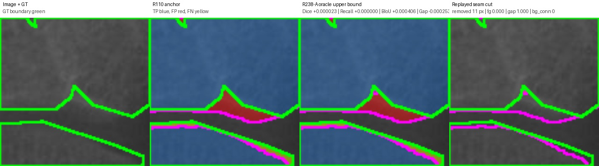
{
"anchor_boundary_f1": "0.2104460365149064",
"anchor_boundary_iou": "0.11759692124906372",
"anchor_component_count_mae": "4.0",
"anchor_component_delta_mean": "4.0",
"anchor_dice": "0.9032246324064638",
"anchor_gap_region_fp_rate": "0.2618191871716892",
"anchor_iou": "0.8235274597643936",
"anchor_precision": "0.9315472140762463",
"anchor_recall": "0.876573462080171",
"cut_pixels": "11.0",
"delta_boundary_f1": "0.000649164187204565",
"delta_boundary_iou": "0.00040555757762497646",
"delta_component_count_mae": "0.0",
"delta_component_delta_mean": "0.0",
"delta_dice": "2.26009052592957e-05",
"delta_gap_region_fp_rate": "-0.0002534328633305716",
"delta_iou": "3.757763153866556e-05",
"delta_precision": "4.808233787945149e-05",
"delta_recall": "0.0",
"edited": "1.0",
"image": "1886.png",
"num_accepted_cuts": "1.0",
"r238_boundary_f1": "0.21109520070211096",
"r238_boundary_iou": "0.1180024788266887",
"r238_component_count_mae": "4.0",
"r238_component_delta_mean": "4.0",
"r238_dice": "0.9032472333117231",
"r238_gap_region_fp_rate": "0.26156575430835866",
"r238_iou": "0.8235650373959322",
"r238_precision": "0.9315952964141258",
"r238_recall": "0.876573462080171"
}
cut=16.0 px, Dice +0.000146, Recall +0.000000, BIoU +0.000390, Gap -0.000681, Cnt -1.000000
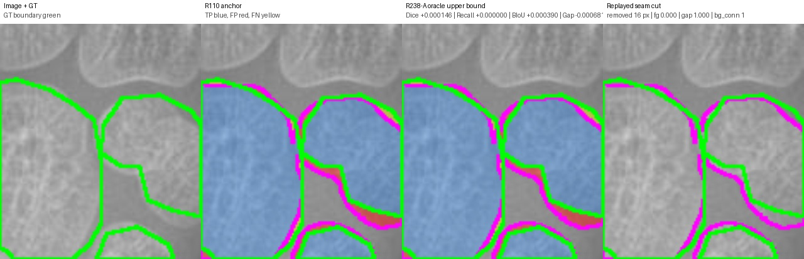
{
"anchor_boundary_f1": "0.27669350802966197",
"anchor_boundary_iou": "0.1605596620908131",
"anchor_component_count_mae": "4.0",
"anchor_component_delta_mean": "-4.0",
"anchor_dice": "0.8648620047409414",
"anchor_gap_region_fp_rate": "0.2727621156630611",
"anchor_iou": "0.7619003225626014",
"anchor_precision": "0.8488719930200673",
"anchor_recall": "0.8814659821390052",
"cut_pixels": "16.0",
"delta_boundary_f1": "0.0005792192430653098",
"delta_boundary_iou": "0.00039020598306552245",
"delta_component_count_mae": "-1.0",
"delta_component_delta_mean": "1.0",
"delta_dice": "0.0001464626595666374",
"delta_gap_region_fp_rate": "-0.0006813729665275381",
"delta_iou": "0.00022736082139995784",
"delta_precision": "0.00028223997108012266",
"delta_recall": "0.0",
"edited": "1.0",
"image": "13867.png",
"num_accepted_cuts": "1.0",
"r238_boundary_f1": "0.2772727272727273",
"r238_boundary_iou": "0.16094986807387862",
"r238_component_count_mae": "3.0",
"r238_component_delta_mean": "-3.0",
"r238_dice": "0.8650084674005081",
"r238_gap_region_fp_rate": "0.27208074269653354",
"r238_iou": "0.7621276833840014",
"r238_precision": "0.8491542329911475",
"r238_recall": "0.8814659821390052"
}
cut=5.0 px, Dice +0.000035, Recall +0.000000, BIoU +0.000366, Gap -0.000189, Cnt +0.000000
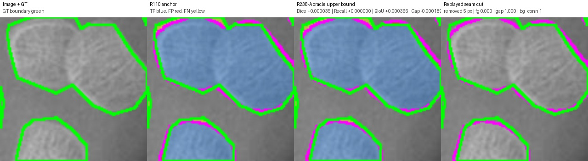
{
"anchor_boundary_f1": "0.4406073474620408",
"anchor_boundary_iou": "0.28255061144794985",
"anchor_component_count_mae": "1.0",
"anchor_component_delta_mean": "-1.0",
"anchor_dice": "0.9396147686702027",
"anchor_gap_region_fp_rate": "0.19084602624038607",
"anchor_iou": "0.88610699291979",
"anchor_precision": "0.9265328001854427",
"anchor_recall": "0.953071443474114",
"cut_pixels": "5.0",
"delta_boundary_f1": "0.00044541061992053876",
"delta_boundary_iou": "0.0003664406642919227",
"delta_component_count_mae": "0.0",
"delta_component_delta_mean": "0.0",
"delta_dice": "3.4513953345527426e-05",
"delta_gap_region_fp_rate": "-0.00018850852058513445",
"delta_iou": "6.13919599350421e-05",
"delta_precision": "6.712157523192097e-05",
"delta_recall": "0.0",
"edited": "1.0",
"image": "15040.png",
"num_accepted_cuts": "1.0",
"r238_boundary_f1": "0.4410527580819613",
"r238_boundary_iou": "0.2829170521122418",
"r238_component_count_mae": "1.0",
"r238_component_delta_mean": "-1.0",
"r238_dice": "0.9396492826235482",
"r238_gap_region_fp_rate": "0.19065751771980094",
"r238_iou": "0.886168384879725",
"r238_precision": "0.9265999217606746",
"r238_recall": "0.953071443474114"
}
cut=6.0 px, Dice +0.000019, Recall +0.000000, BIoU +0.000351, Gap -0.000163, Cnt +0.000000
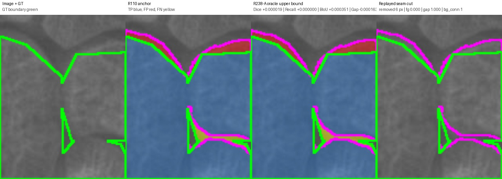
{
"anchor_boundary_f1": "0.29161933785842914",
"anchor_boundary_iou": "0.17069927348209651",
"anchor_component_count_mae": "0.0",
"anchor_component_delta_mean": "0.0",
"anchor_dice": "0.9247887247520992",
"anchor_gap_region_fp_rate": "0.29880467264330346",
"anchor_iou": "0.8600995414030418",
"anchor_precision": "0.9105899009596826",
"anchor_recall": "0.9394373669379009",
"cut_pixels": "6.0",
"delta_boundary_f1": "0.0005123817527266095",
"delta_boundary_iou": "0.00035122436112342004",
"delta_component_count_mae": "0.0",
"delta_component_delta_mean": "0.0",
"delta_dice": "1.881755468013946e-05",
"delta_gap_region_fp_rate": "-0.00016299918500406463",
"delta_iou": "3.255465994045359e-05",
"delta_precision": "3.6489033037656604e-05",
"delta_recall": "0.0",
"edited": "1.0",
"image": "1934.png",
"num_accepted_cuts": "1.0",
"r238_boundary_f1": "0.29213171961115575",
"r238_boundary_iou": "0.17105049784321993",
"r238_component_count_mae": "0.0",
"r238_component_delta_mean": "0.0",
"r238_dice": "0.9248075423067793",
"r238_gap_region_fp_rate": "0.2986416734582994",
"r238_iou": "0.8601320960629822",
"r238_precision": "0.9106263899927203",
"r238_recall": "0.9394373669379009"
}
cut=11.0 px, Dice +0.000028, Recall +0.000000, BIoU +0.000350, Gap -0.000282, Cnt +0.000000
{
"anchor_boundary_f1": "0.2584201821857034",
"anchor_boundary_iou": "0.14838262337584035",
"anchor_component_count_mae": "0.0",
"anchor_component_delta_mean": "0.0",
"anchor_dice": "0.9326549486223343",
"anchor_gap_region_fp_rate": "0.317086906437988",
"anchor_iou": "0.87380828478899",
"anchor_precision": "0.9196590467986451",
"anchor_recall": "0.9460234110053605",
"cut_pixels": "11.0",
"delta_boundary_f1": "0.0005299490478923863",
"delta_boundary_iou": "0.00034955017015417256",
"delta_component_count_mae": "0.0",
"delta_component_delta_mean": "0.0",
"delta_dice": "2.7662535214134643e-05",
"delta_gap_region_fp_rate": "-0.00028158197875338686",
"delta_iou": "4.856501749550546e-05",
"delta_precision": "5.379553052264896e-05",
"delta_recall": "0.0",
"edited": "1.0",
"image": "1812.png",
"num_accepted_cuts": "1.0",
"r238_boundary_f1": "0.2589501312335958",
"r238_boundary_iou": "0.14873217354599452",
"r238_component_count_mae": "0.0",
"r238_component_delta_mean": "0.0",
"r238_dice": "0.9326826111575485",
"r238_gap_region_fp_rate": "0.3168053244592346",
"r238_iou": "0.8738568498064855",
"r238_precision": "0.9197128423291677",
"r238_recall": "0.9460234110053605"
}
cut=11.0 px, Dice +0.000081, Recall +0.000000, BIoU +0.000327, Gap -0.000412, Cnt +0.000000
{
"anchor_boundary_f1": "0.3631018008085263",
"anchor_boundary_iou": "0.22182308037718904",
"anchor_component_count_mae": "0.0",
"anchor_component_delta_mean": "0.0",
"anchor_dice": "0.9164516103259003",
"anchor_gap_region_fp_rate": "0.16284825077805692",
"anchor_iou": "0.8457874323467386",
"anchor_precision": "0.9284615758203688",
"anchor_recall": "0.9047483830257138",
"cut_pixels": "11.0",
"delta_boundary_f1": "0.0004380799980701622",
"delta_boundary_iou": "0.0003270817580067753",
"delta_component_count_mae": "0.0",
"delta_component_delta_mean": "0.0",
"delta_dice": "8.055108041216119e-05",
"delta_gap_region_fp_rate": "-0.00041246390940793964",
"delta_iou": "0.00013722619776124212",
"delta_precision": "0.000165367184812526",
"delta_recall": "0.0",
"edited": "1.0",
"image": "13436.png",
"num_accepted_cuts": "1.0",
"r238_boundary_f1": "0.36353988080659644",
"r238_boundary_iou": "0.2221501621351958",
"r238_component_count_mae": "0.0",
"r238_component_delta_mean": "0.0",
"r238_dice": "0.9165321614063124",
"r238_gap_region_fp_rate": "0.16243578686864898",
"r238_iou": "0.8459246585444998",
"r238_precision": "0.9286269430051813",
"r238_recall": "0.9047483830257138"
}
cut=2.0 px, Dice +0.000028, Recall +0.000000, BIoU +0.000309, Gap -0.000111, Cnt +0.000000
{
"anchor_boundary_f1": "0.5083284799068142",
"anchor_boundary_iou": "0.3407777604248009",
"anchor_component_count_mae": "0.0",
"anchor_component_delta_mean": "0.0",
"anchor_dice": "0.9275397909536015",
"anchor_gap_region_fp_rate": "0.07839229363893041",
"anchor_iou": "0.8648710536107851",
"anchor_precision": "0.9552050074289508",
"anchor_recall": "0.9014319809069212",
"cut_pixels": "2.0",
"delta_boundary_f1": "0.00034338599936667435",
"delta_boundary_iou": "0.00030872099886442017",
"delta_component_count_mae": "0.0",
"delta_component_delta_mean": "0.0",
"delta_dice": "2.847353965262922e-05",
"delta_gap_region_fp_rate": "-0.00011072357858606108",
"delta_iou": "4.9513156067604314e-05",
"delta_precision": "6.03967631392921e-05",
"delta_recall": "0.0",
"edited": "1.0",
"image": "3725.png",
"num_accepted_cuts": "1.0",
"r238_boundary_f1": "0.5086718659061809",
"r238_boundary_iou": "0.3410864814236653",
"r238_component_count_mae": "0.0",
"r238_component_delta_mean": "0.0",
"r238_dice": "0.9275682644932541",
"r238_gap_region_fp_rate": "0.07828157006034435",
"r238_iou": "0.8649205667668527",
"r238_precision": "0.95526540419209",
"r238_recall": "0.9014319809069212"
}
cut=5.0 px, Dice +0.000031, Recall +0.000000, BIoU +0.000295, Gap -0.000183, Cnt +0.000000
{
"anchor_boundary_f1": "0.3760599262329366",
"anchor_boundary_iou": "0.23157253910274422",
"anchor_component_count_mae": "2.0",
"anchor_component_delta_mean": "2.0",
"anchor_dice": "0.925741399762752",
"anchor_gap_region_fp_rate": "0.2176649226153452",
"anchor_iou": "0.8617491166077739",
"anchor_precision": "0.9180576432912881",
"anchor_recall": "0.9335548614341729",
"cut_pixels": "5.0",
"delta_boundary_f1": "0.0003891976410228537",
"delta_boundary_iou": "0.00029523258803632046",
"delta_component_count_mae": "0.0",
"delta_component_delta_mean": "0.0",
"delta_dice": "3.050520314240579e-05",
"delta_gap_region_fp_rate": "-0.00018294244630637224",
"delta_iou": "5.2868692659302496e-05",
"delta_precision": "6.0003767535343755e-05",
"delta_recall": "0.0",
"edited": "1.0",
"image": "12827.png",
"num_accepted_cuts": "1.0",
"r238_boundary_f1": "0.37644912387395946",
"r238_boundary_iou": "0.23186777169078054",
"r238_component_count_mae": "2.0",
"r238_component_delta_mean": "2.0",
"r238_dice": "0.9257719049658945",
"r238_gap_region_fp_rate": "0.21748198016903883",
"r238_iou": "0.8618019853004332",
"r238_precision": "0.9181176470588235",
"r238_recall": "0.9335548614341729"
}
cut=3.0 px, Dice +0.000007, Recall +0.000000, BIoU +0.000267, Gap -0.000070, Cnt +0.000000
{
"anchor_boundary_f1": "0.3021677352685596",
"anchor_boundary_iou": "0.1779726664084546",
"anchor_component_count_mae": "0.0",
"anchor_component_delta_mean": "0.0",
"anchor_dice": "0.9354862083392742",
"anchor_gap_region_fp_rate": "0.19487024883467452",
"anchor_iou": "0.8787920040752516",
"anchor_precision": "0.9561338964910939",
"anchor_recall": "0.9157114421030956",
"cut_pixels": "3.0",
"delta_boundary_f1": "0.0003844471173904962",
"delta_boundary_iou": "0.0002667935893322648",
"delta_component_count_mae": "0.0",
"delta_component_delta_mean": "0.0",
"delta_dice": "6.5597824943086636e-06",
"delta_gap_region_fp_rate": "-6.95716704157967e-05",
"delta_iou": "1.1577626276237929e-05",
"delta_precision": "1.3705196492352911e-05",
"delta_recall": "0.0",
"edited": "1.0",
"image": "1846.png",
"num_accepted_cuts": "1.0",
"r238_boundary_f1": "0.3025521823859501",
"r238_boundary_iou": "0.17823945999778687",
"r238_component_count_mae": "0.0",
"r238_component_delta_mean": "0.0",
"r238_dice": "0.9354927681217685",
"r238_gap_region_fp_rate": "0.19480067716425872",
"r238_iou": "0.8788035817015278",
"r238_precision": "0.9561476016875863",
"r238_recall": "0.9157114421030956"
}
cut=4.0 px, Dice +0.000033, Recall +0.000000, BIoU +0.000261, Gap -0.000163, Cnt +0.000000
{
"anchor_boundary_f1": "0.35778080865854195",
"anchor_boundary_iou": "0.2178642233295826",
"anchor_component_count_mae": "0.0",
"anchor_component_delta_mean": "0.0",
"anchor_dice": "0.9099027385102431",
"anchor_gap_region_fp_rate": "0.1703413359464315",
"anchor_iou": "0.8346986738291086",
"anchor_precision": "0.920063653017042",
"anchor_recall": "0.8999638009049774",
"cut_pixels": "4.0",
"delta_boundary_f1": "0.00035197325003299973",
"delta_boundary_iou": "0.00026107813351830544",
"delta_component_count_mae": "0.0",
"delta_component_delta_mean": "0.0",
"delta_dice": "3.3302628389408895e-05",
"delta_gap_region_fp_rate": "-0.0001633186346562121",
"delta_iou": "5.6052021208730096e-05",
"delta_precision": "6.810367719733978e-05",
"delta_recall": "0.0",
"edited": "1.0",
"image": "7259.png",
"num_accepted_cuts": "1.0",
"r238_boundary_f1": "0.35813278190857495",
"r238_boundary_iou": "0.2181253014631009",
"r238_component_count_mae": "0.0",
"r238_component_delta_mean": "0.0",
"r238_dice": "0.9099360411386325",
"r238_gap_region_fp_rate": "0.1701780173117753",
"r238_iou": "0.8347547258503173",
"r238_precision": "0.9201317566942393",
"r238_recall": "0.8999638009049774"
}
cut=4.0 px, Dice +0.000017, Recall +0.000000, BIoU +0.000243, Gap -0.000112, Cnt +0.000000
{
"anchor_boundary_f1": "0.3189582177581827",
"anchor_boundary_iou": "0.1897384235939834",
"anchor_component_count_mae": "3.0",
"anchor_component_delta_mean": "3.0",
"anchor_dice": "0.9234991761587507",
"anchor_gap_region_fp_rate": "0.23163952835485682",
"anchor_iou": "0.8578713138959364",
"anchor_precision": "0.9238466362089044",
"anchor_recall": "0.9231519773707861",
"cut_pixels": "4.0",
"delta_boundary_f1": "0.0003435104062264327",
"delta_boundary_iou": "0.00024316531767809568",
"delta_component_count_mae": "0.0",
"delta_component_delta_mean": "0.0",
"delta_dice": "1.653979002702588e-05",
"delta_gap_region_fp_rate": "-0.0001122964626614209",
"delta_iou": "2.8545517927525133e-05",
"delta_precision": "3.3105070009087356e-05",
"delta_recall": "0.0",
"edited": "1.0",
"image": "1828.png",
"num_accepted_cuts": "1.0",
"r238_boundary_f1": "0.31930172816440916",
"r238_boundary_iou": "0.1899815889116615",
"r238_component_count_mae": "3.0",
"r238_component_delta_mean": "3.0",
"r238_dice": "0.9235157159487777",
"r238_gap_region_fp_rate": "0.2315272318921954",
"r238_iou": "0.8578998594138639",
"r238_precision": "0.9238797412789135",
"r238_recall": "0.9231519773707861"
}
cut=11.0 px, Dice +0.000029, Recall +0.000000, BIoU +0.000001, Gap -0.000255, Cnt +0.000000
{
"anchor_boundary_f1": "0.2388905457798986",
"anchor_boundary_iou": "0.13564775613886537",
"anchor_component_count_mae": "5.0",
"anchor_component_delta_mean": "-5.0",
"anchor_dice": "0.9149379681143169",
"anchor_gap_region_fp_rate": "0.2724452470250498",
"anchor_iou": "0.843212591748589",
"anchor_precision": "0.9063617927860187",
"anchor_recall": "0.923677992766622",
"cut_pixels": "11.0",
"delta_boundary_f1": "2.2084194851723637e-06",
"delta_boundary_iou": "1.4240964818779123e-06",
"delta_component_count_mae": "0.0",
"delta_component_delta_mean": "0.0",
"delta_dice": "2.893758273359026e-05",
"delta_gap_region_fp_rate": "-0.00025466499976850576",
"delta_iou": "4.915805531591211e-05",
"delta_precision": "5.679702695515765e-05",
"delta_recall": "0.0",
"edited": "1.0",
"image": "1660.png",
"num_accepted_cuts": "1.0",
"r238_boundary_f1": "0.23889275419938377",
"r238_boundary_iou": "0.13564918023534725",
"r238_component_count_mae": "5.0",
"r238_component_delta_mean": "-5.0",
"r238_dice": "0.9149669056970505",
"r238_gap_region_fp_rate": "0.2721905820252813",
"r238_iou": "0.8432617498039049",
"r238_precision": "0.9064185898129739",
"r238_recall": "0.923677992766622"
}
cut=2.0 px, Dice +0.000051, Recall +0.000000, BIoU +0.000000, Gap -0.000163, Cnt +0.000000
{
"anchor_boundary_f1": "0.5301007899754835",
"anchor_boundary_iou": "0.36063750926612304",
"anchor_component_count_mae": "1.0",
"anchor_component_delta_mean": "-1.0",
"anchor_dice": "0.9199832191301915",
"anchor_gap_region_fp_rate": "0.18038928251486278",
"anchor_iou": "0.851823078516677",
"anchor_precision": "0.8809791633188708",
"anchor_recall": "0.9626009598501697",
"cut_pixels": "2.0",
"delta_boundary_f1": "0.0",
"delta_boundary_iou": "0.0",
"delta_component_count_mae": "0.0",
"delta_component_delta_mean": "0.0",
"delta_dice": "5.1463274082230726e-05",
"delta_gap_region_fp_rate": "-0.00016287971333170392",
"delta_iou": "8.824438811938506e-05",
"delta_precision": "9.438893912461221e-05",
"delta_recall": "0.0",
"edited": "1.0",
"image": "1590.png",
"num_accepted_cuts": "1.0",
"r238_boundary_f1": "0.5301007899754835",
"r238_boundary_iou": "0.36063750926612304",
"r238_component_count_mae": "1.0",
"r238_component_delta_mean": "-1.0",
"r238_dice": "0.9200346824042738",
"r238_gap_region_fp_rate": "0.18022640280153107",
"r238_iou": "0.8519113229047964",
"r238_precision": "0.8810735522579954",
"r238_recall": "0.9626009598501697"
}
cut=24.0 px, Dice +0.000055, Recall +0.000000, BIoU -0.000047, Gap -0.000599, Cnt -1.000000
{
"anchor_boundary_f1": "0.1911836524868269",
"anchor_boundary_iou": "0.10569544705280509",
"anchor_component_count_mae": "2.0",
"anchor_component_delta_mean": "-2.0",
"anchor_dice": "0.9004612665430874",
"anchor_gap_region_fp_rate": "0.3186103351955307",
"anchor_iou": "0.8189445620638282",
"anchor_precision": "0.9027022904644483",
"anchor_recall": "0.8982313420754412",
"cut_pixels": "24.0",
"delta_boundary_f1": "-7.630872478636697e-05",
"delta_boundary_iou": "-4.6644121902819635e-05",
"delta_component_count_mae": "-1.0",
"delta_component_delta_mean": "1.0",
"delta_dice": "5.480522512402164e-05",
"delta_gap_region_fp_rate": "-0.0005985634477254642",
"delta_iou": "9.066768840571005e-05",
"delta_precision": "0.00011016345371550607",
"delta_recall": "0.0",
"edited": "1.0",
"image": "1742.png",
"num_accepted_cuts": "1.0",
"r238_boundary_f1": "0.19110734376204053",
"r238_boundary_iou": "0.10564880293090227",
"r238_component_count_mae": "1.0",
"r238_component_delta_mean": "-1.0",
"r238_dice": "0.9005160717682115",
"r238_gap_region_fp_rate": "0.31801177174780526",
"r238_iou": "0.8190352297522339",
"r238_precision": "0.9028124539181638",
"r238_recall": "0.8982313420754412"
}
cut=2.0 px, Dice +0.000027, Recall +0.000000, BIoU -0.000102, Gap -0.000108, Cnt +0.000000
{
"anchor_boundary_f1": "0.4363927305977826",
"anchor_boundary_iou": "0.279093567251462",
"anchor_component_count_mae": "1.0",
"anchor_component_delta_mean": "-1.0",
"anchor_dice": "0.9100414962623403",
"anchor_gap_region_fp_rate": "0.21968794018853613",
"anchor_iou": "0.8349322411281234",
"anchor_precision": "0.8807121317559731",
"anchor_recall": "0.9413916008058267",
"cut_pixels": "2.0",
"delta_boundary_f1": "-0.00012466226663937485",
"delta_boundary_iou": "-0.00010197061280653452",
"delta_component_count_mae": "0.0",
"delta_component_delta_mean": "0.0",
"delta_dice": "2.726675244602017e-05",
"delta_gap_region_fp_rate": "-0.00010835410120271782",
"delta_iou": "4.590440339380386e-05",
"delta_precision": "5.10765024506199e-05",
"delta_recall": "0.0",
"edited": "1.0",
"image": "2024.png",
"num_accepted_cuts": "1.0",
"r238_boundary_f1": "0.43626806833114323",
"r238_boundary_iou": "0.27899159663865547",
"r238_component_count_mae": "1.0",
"r238_component_delta_mean": "-1.0",
"r238_dice": "0.9100687630147863",
"r238_gap_region_fp_rate": "0.2195795860873334",
"r238_iou": "0.8349781455315172",
"r238_precision": "0.8807632082584237",
"r238_recall": "0.9413916008058267"
}